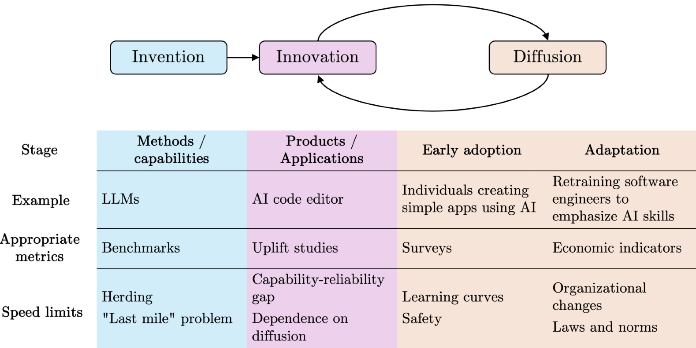
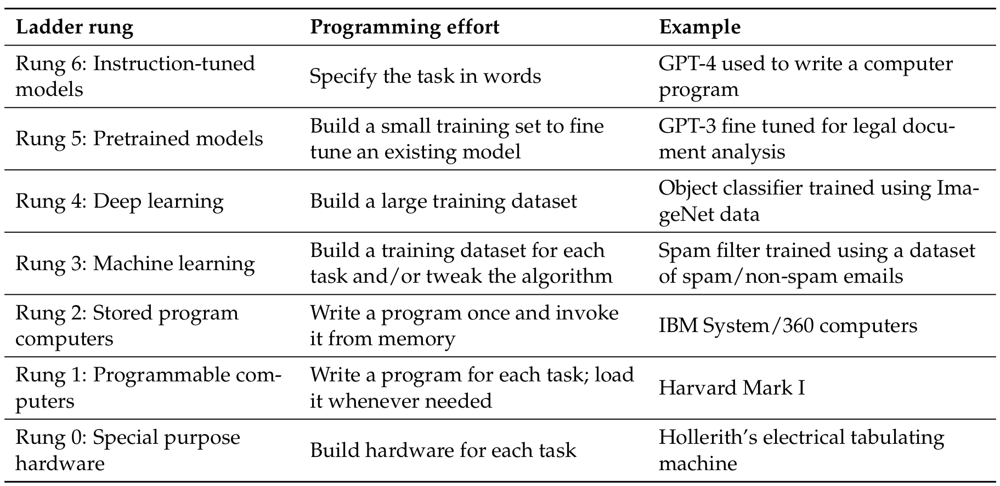
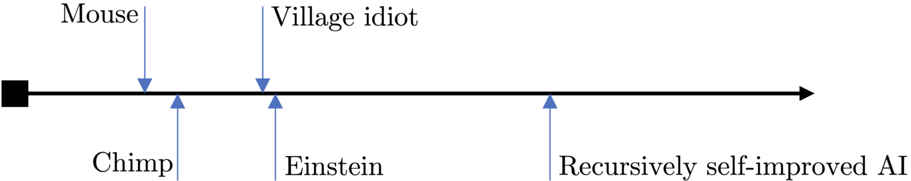
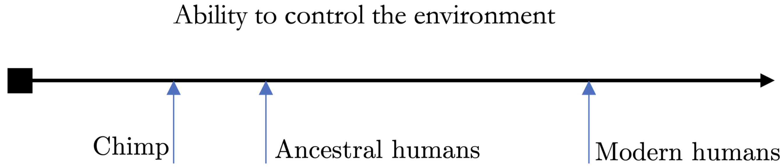
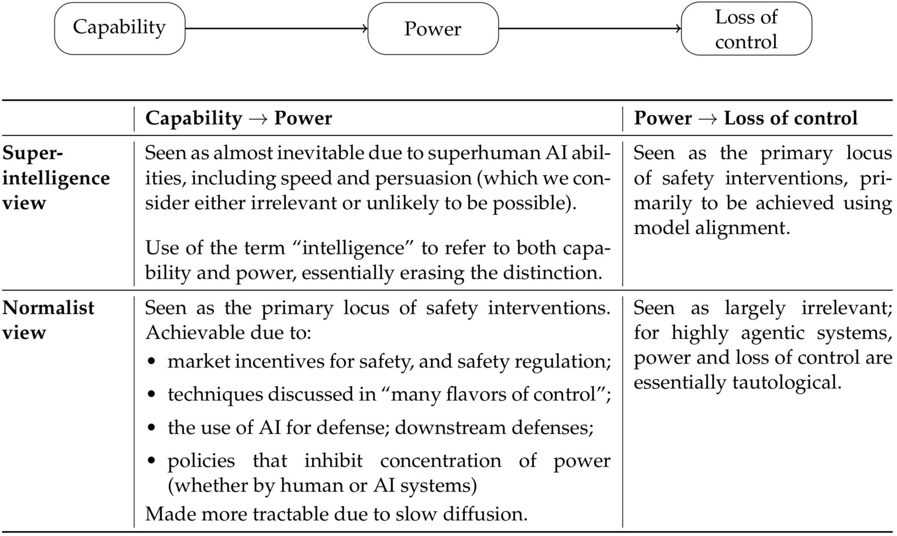
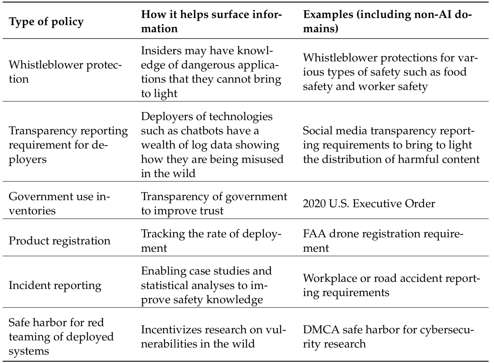
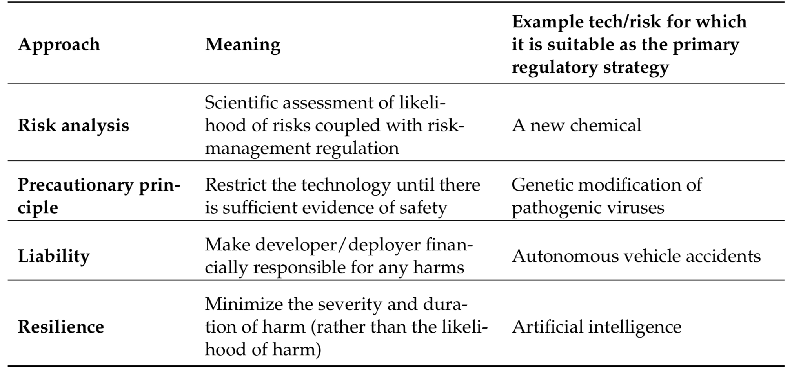

We articulate a vision of artificial intelligence (AI) as normal technology. To view AI as normal is not to understate its impact—even transformative, general-purpose technologies such as electricity and the internet are “normal” in our conception. But it is in contrast to both utopian and dystopian visions of the future of AI which have a common tendency to treat it akin to a separate species, a highly autonomous, potentially superintelligent entity.
The statement “AI is normal technology” is three things: a description of current AI, a prediction about the foreseeable future of AI, and a prescription about how we should treat it. We view AI as a tool that we can and should remain in control of, and we argue that this goal does not require drastic policy interventions or technical breakthroughs. We do not think that viewing AI as a humanlike intelligence is currently accurate or useful for understanding its societal impacts, nor is it likely to be in our vision of the future.
The normal technology frame is about the relationship between technology and society. It rejects technological determinism, especially the notion of AI itself as an agent in determining its future. It is guided by lessons from past technological revolutions, such as the slow and uncertain nature of technology adoption and diffusion. It also emphasizes continuity between the past and the future trajectory of AI in terms of societal impact and the role of institutions in shaping this trajectory.
In Part I, we explain why we think that transformative economic and societal impacts will be slow (on the timescale of decades), making a critical distinction between AI methods, AI applications, and AI adoption, arguing that the three happen at different timescales.
In Part II, we discuss a potential division of labor between humans and AI in a world with advanced AI (but not “superintelligent” AI, which we view as incoherent as usually conceptualized). In this world, control is primarily in the hands of people and organizations; indeed, a greater and greater proportion of what people do in their jobs is AI control.
In Part III, we examine the implications of AI as normal technology for AI risks. We analyze accidents, arms races, misuse, and misalignment, and argue that viewing AI as normal technology leads to fundamentally different conclusions about mitigations compared to viewing AI as being humanlike.
Of course, we cannot be certain of our predictions, but we aim to describe what we view as the median outcome. We have not tried to quantify probabilities, but we have tried to make predictions that can tell us whether or not AI is behaving like normal technology.
In Part IV, we discuss the implications for AI policy. We advocate for reducing uncertainty as a first-rate policy goal and resilience as the overarching approach to catastrophic risks. We argue that drastic interventions premised on the difficulty of controlling superintelligent AI will, in fact, make things much worse if AI turns out to be normal technology— the downsides of which will be likely to mirror those of previous technologies that are deployed in capitalistic societies, such as inequality.
The world we describe in Part II is one in which AI is far more advanced than it is today. We are not claiming that AI progress—or human progress—will stop at that point. What comes after it? We do not know. Consider this analogy: At the dawn of the first Industrial Revolution, it would have been useful to try to think about what an industrial world would look like and how to prepare for it, but it would have been futile to try to predict electricity or computers. Our exercise here is similar. Since we reject “fast takeoff” scenarios, we do not see it as necessary or useful to envision a world further ahead than we have attempted to. If and when the scenario we describe in Part II materializes, we will be able to better anticipate and prepare for whatever comes next.
A note to readers. This essay has the unusual goal of stating a worldview rather than defending a proposition. The literature on AI superintelligence is copious. We have not tried to give a point-by-point response to potential counter arguments, as that would make the paper several times longer. This paper is merely the initial articulation of our views; we plan to elaborate on them in various follow ups.
Part I: The Speed of Progress

Figure 1. Like other general-purpose technologies, the impact of AI is materialized not when methods and capabilities improve, but when those improvements are translated into applications and are diffused through productive sectors of the economy. There are speed limits at each stage.
Will the progress of AI be gradual, allowing people and institutions to adapt as AI capabilities and adoption increase, or will there be jumps leading to massive disruption, or even a technological singularity? Our approach to this question is to analyze highly consequential tasks separately from less consequential tasks and to begin by analyzing the speed of adoption and diffusion of AI before returning to the speed of innovation and invention.
We use invention to refer to the development of new AI methods—such as large language models—that improve AI’s capabilities to carry out various tasks. Innovation refers to the development of products and applications using AI that consumers and businesses can use. Adoption refers to the decision by an individual (or team or firm) to use a technology, whereas diffusion refers to the broader social process through which the level of adoption increases. For sufficiently disruptive technologies, diffusion might require changes to the structure of firms and organizations, as well as to social norms and laws.
AI diffusion in safety-critical areas is slow
In the paper Against Predictive Optimization, we compiled a comprehensive list of about 50 applications of predictive optimization, namely the use of machine learning (ML) to make decisions about individuals by predicting their future behavior or outcomes. Most of these applications, such as criminal risk prediction, insurance risk prediction, or child maltreatment prediction, are used to make decisions that have important consequences for people.
While these applications have proliferated, there is a crucial nuance: In most cases, decades-old statistical techniques are used—simple, interpretable models (mostly regression) and relatively small sets of handcrafted features. More complex machine learning methods, such as random forests, are rarely used, and modern methods, such as transformers, are nowhere to be found.
In other words, in this broad set of domains, AI diffusion lags decades behind innovation. A major reason is safety—when models are more complex and less intelligible, it is hard to anticipate all possible deployment conditions in the testing and validation process. A good example is Epic’s sepsis prediction tool which, despite having seemingly high accuracy when internally validated, performed far worse in hospitals, missing two thirds of sepsis cases and overwhelming physicians with false alerts.
Epic’s sepsis prediction tool failed because of errors that are hard to catch when you have complex models with unconstrained feature sets. In particular, one of the features used to train the model was whether a physician had already prescribed antibiotics —to treat sepsis. In other words, during testing and validation, the model was using a feature from the future, relying on a variable that was causally dependent on the outcome. Of course, this feature would not be available during deployment. Interpretability and auditing methods will no doubt improve so that we will get much better at catching these issues, but we are not there yet.
In the case of generative AI, even failures that seem extremely obvious in hindsight were not caught during testing. One example is the early Bing chatbot “Sydney” that went off the rails during extended conversations; the developers evidently did not anticipate that conversations could last for more than a handful of turns. Similarly, the Gemini image generator was seemingly never tested on historical figures. Fortunately, these were not highly consequential applications.
More empirical work would be helpful for understanding the innovation-diffusion lag in various applications and the reasons for this lag. But, for now, the evidence that we have analyzed in our previous work is consistent with the view that there are already extremely strong safety-related speed limits in highly consequential tasks. These limits are often enforced through regulation, such as the FDA’s supervision of medical devices, as well as newer legislation such as the EU AI Act, which puts strict requirements on high-risk AI. In fact, there are (credible) concerns that existing regulation of high-risk AI is so onerous that it may lead to “runaway bureaucracy”. Thus, we predict that slow diffusion will continue to be the norm in high-consequence tasks.
At any rate, as and when new areas arise in which AI can be used in highly consequential ways, we can and must regulate them. A good example is the Flash Crash of 2010, in which automated high-frequency trading is thought to have played a part. This led to new curbs on trading, such as circuit breakers.
Diffusion is limited by the speed of human, organizational, and institutional change
Even outside of safety-critical areas, AI adoption is slower than popular accounts would suggest. For example, a study made headlines due to the finding that, in August 2024, 40% of U.S. adults used generative AI. But, because most people used it infrequently, this only translated to 0.5%-3.5% of work hours (and a 0.125-0.875 percentage point increase in labor productivity).
It is not even clear if the speed of diffusion is greater today compared to the past. The aforementioned study reported that generative AI adoption in the U.S. has been faster than personal computer (PC) adoption, with 40% of U.S. adults adopting generative AI within two years of the first mass-market product release compared to 20 % within three years for PCs. But this comparison does not account for differences in the intensity of adoption (the number of hours of use) or the high cost of buying a PC compared to accessing generative AI. Depending on how we measure adoption, it is quite possible that the adoption of generative AI has been much slower than PC adoption.
The claim that the speed of technology adoption is not necessarily increasing may seem surprising (or even obviously wrong) given that digital technology can reach billions of devices at once. But it is important to remember that adoption is about software use, not availability. Even if a new AI-based product is instantly released online for anyone to use for free, it takes time to for people to change their workflows and habits to take advantage of the benefits of the new product and to learn to avoid the risks.
Thus, the speed of diffusion is inherently limited by the speed at which not only individuals, but also organizations and institutions, can adapt to technology. This is a trend that we have also seen for past general-purpose technologies: Diffusion occurs over decades, not years.
As an example, Paul A. David’s analysis of electrification shows that the productivity benefits took decades to fully materialize. Electric dynamos were “everywhere but in the productivity statistics” for nearly 40 years after Edison’s first central generating station. This was not just technological inertia; factory owners found that electrification did not bring substantial efficiency gains.
What eventually allowed gains to be realized was redesigning the entire layout of factories around the logic of production lines. In addition to changes to factory architecture, diffusion also required changes to workplace organization and process control, which could only be developed through experimentation across industries. Workers had more autonomy and flexibility as a result of the changes, which also necessitated different hiring and training practices.
The External world puts a speed limit on AI innovation
It is true that technical advances in AI have been rapid, but the picture is much less clear when we differentiate AI methods from applications.
We conceptualize progress in AI methods as a ladder of generality. Each step on this ladder rests on the ones below it and reflects a move toward more general computing capabilities. That is, it reduces the programmer effort needed to get the computer to perform a new task and increases the set of tasks that can be performed with a given amount of programmer (or user) effort; see Figure 2. For example, machine learning increases generality by obviating the need for the programmer to devise logic to solve each new task, only requiring the collection of training examples instead.
It is tempting to conclude that the effort required to develop specific applications will keep decreasing as we build more rungs of the ladder until we reach artificial general intelligence, often conceptualized as an AI system that can do everything out of the box, obviating the need to develop applications altogether.
In some domains, we are indeed seeing this trend of decreasing application development effort. In natural language processing, large language models have made it relatively trivial to develop a language translation application. Or consider games: AlphaZero can learn to play games such as chess better than any human through self-play given little more than a description of the game and enough computing power—a far cry from how game-playing programs used to be developed.

Figure 2: The Ladder of Generality in Computing. For some tasks, higher ladder rungs require less programmer effort to get a computer to perform a new task, and more tasks can be performed with a given amount of programmer (or user) effort.
However, this has not been the trend in highly consequential, real-world applications that cannot easily be simulated and in which errors are costly. Consider self-driving cars: In many ways, the trajectory of their development is similar to AlphaZero’s self-play—improving the tech allowed them to drive in more realistic conditions, which enabled the collection of better and/or more realistic data, which in turn led to improvements in the tech, completing the feedback loop. But this process took over two decades instead of a few hours in the case of AlphaZero because safety considerations put a limit on the extent to which each iteration of this loop could be scaled up compared to the previous one.
This “capability-reliability gap” shows up over and over. It has been a major barrier to building useful AI “agents” that can automate real-world tasks. To be clear, many tasks for which the use of agents is envisioned, such as booking travel or providing customer service, are far less consequential than driving, but still costly enough that having agents learn from real-world experiences is not straightforward.
Barriers also exist in non-safety-critical applications. In general, much knowledge is tacit in organizations and is not written down, much less in a form that can be learned passively. This means that these developmental feedback loops will have to happen in each sector and, for more complex tasks, may even need to occur separately in different organizations, limiting opportunities for rapid, parallel learning. Other reasons why parallel learning might be limited are privacy concerns: Organizations and individuals might be averse to sharing sensitive data with AI companies, and regulations might limit what kinds of data can be shared with third parties in contexts such as healthcare.
The “bitter lesson” in AI is that general methods that leverage increases in computational power eventually surpass methods that utilize human domain knowledge by a large margin. This is a valuable observation about methods, but it is often misinterpreted to encompass application development. In the context of AI-based product development, the bitter lesson has never been even close to true. Consider recommender systems on social media: They are powered by (increasingly general) machine learning models, but this has not obviated the need for manual coding of the business logic, the frontend, and other components which, together, can comprise on the order of a million lines of code.
Further limits arise when we need to go beyond AI learning from existing human knowledge. Some of our most valuable types of knowledge are scientific and social-scientific, and have allowed the progress of civilization through technology and large-scale social organizations (e.g., governments). What will it take for AI to push the boundaries of such knowledge? It will likely require interactions with, or even experiments on, people or organizations, ranging from drug testing to economic policy. Here, there are hard limits to the speed of knowledge acquisition because of the social costs of experimentation. Societies probably will not (and should not) allow the rapid scaling of experiments for AI development.
Benchmarks do not measure real-world utility
The methods-application distinction has important implications for how we measure and forecast AI progress. AI benchmarks are useful for measuring progress in methods; unfortunately, they have often been misunderstood as measuring progress in applications, and this confusion has been a driver of much hype about imminent economic transformation.
For example, while GPT-4 reportedly achieved scores in the top 10% of bar exam test takers, this tells us remarkably little about AI’s ability to practice law. The bar exam overemphasizes subject-matter knowledge and under-emphasizes real-world skills that are far harder to measure in a standardized, computer-administered format. In other words, it emphasizes precisely what language models are good at—retrieving and applying memorized information.
More broadly, tasks that would lead to the most significant changes to the legal profession are also the hardest ones to evaluate. Evaluation is straightforward for tasks like categorizing legal requests by area of law because there are clear correct answers. But for tasks that involve creativity and judgment, like preparing legal filings, there is no single correct answer, and reasonable people can disagree about strategy. These latter tasks are precisely the ones that, if automated, would have the most profound impact on the profession.
This observation is in no way limited to law. Another example is the gap between self-contained coding problems at which AI demonstrably excels, and real-world software engineering in which its impact is hard to measure but appears to be modest. Even highly regarded coding benchmarks that go beyond toy problems must necessarily ignore many dimensions of real-world software engineering in the interest of quantification and automated evaluation using publicly available data.
This pattern appears repeatedly: The easier a task is to measure via benchmarks, the less likely it is to represent the kind of complex, contextual work that defines professional practice. By focusing heavily on capability benchmarks to inform our understanding of AI progress, the AI community consistently overestimates the real-world impact of the technology.
This is a problem of ‘construct validity,’ which refers to whether a test actually measures what it is intended to measure. The only sure way to measure real-world usefulness of a potential application is to actually build the application and to then test it with professionals in realistic scenarios (either substituting or augmenting their labor, depending on the intended use). Such ‘uplift’ studies generally do show that professionals in many occupations benefit from existing AI systems, but this benefit is typically modest and is more about augmentation than substitution, a radically different picture from what one might conclude based on static benchmarks like exams (a small number of occupations such as copywriters and translators have seen substantial job losses ).
In conclusion, while benchmarks are valuable for tracking progress in AI methods, we should look at other kinds of metrics to track AI impacts (Figure 1). When measuring adoption, we must take into account the intensity of AI use. The type of application is also important: Augmentation versus substitution and high-consequence versus low-consequence.
The difficulty of ensuring construct validity afflicts not only benchmarking, but also forecasting, which is another major way in which people try to assess (future) AI impacts. It is extremely important to avoid ambiguous outcomes to ensure effective forecasting. The way that the forecasting community accomplishes this is by defining milestones in terms of relatively narrow skills, such as exam performance. For instance, the Metaculus question on “human-machine intelligence parity” is defined in terms of performance on exam questions in math, physics, and computer science. Based on this definition, it is not surprising that forecasters predict a 95% chance of achieving “human-machine intelligence parity” by 2040.
Unfortunately, this definition is so watered down that it does not mean much for understanding the impacts of AI. As we saw above with legal and other professional benchmarks, AI performance on exams has so little construct validity that it does not even allow us to predict whether AI will replace professional workers.
Economic impacts are likely to be gradual
One argument for why AI development may have sudden, drastic economic impacts is that an increase in generality may lead to a wide swath of tasks in the economy becoming automatable. This is related to one definition of artificial general intelligence (AGI)—a unified system that is capable of performing all economically valuable tasks.
According to the normal technology view, such sudden economic impacts are implausible. In the previous sections, we discussed one reason: Sudden improvements in AI methods are certainly possible but do not directly translate to economic impacts, which require innovation (in the sense of application development) and diffusion.
Innovation and diffusion happen in a feedback loop. In safety-critical applications, this feedback loop is always slow, but even beyond safety, there are many reasons why it is likely to be slow. With past general-purpose technologies such as electricity, computers, and the internet, the respective feedback loops unfolded over several decades, and we should expect the same to happen with AI as well.
Another argument for gradual economic impacts: Once we automate something, its cost of production, and its value, tend to drop drastically over time compared to the cost of human labor. As automation increases, humans will adapt, and will focus on tasks that are not yet automated, perhaps tasks that do not exist today (in Part II we describe what those might look like).
This means that the goalpost of AGI will continually move further away as increasing automation redefines which tasks are economically valuable. Even if every task that humans do today might be automated one day, this does not mean that human labor will be superfluous.
All of this points away from the likelihood of the automation of a vast swath of the economy at a particular moment in time. It also implies that the impacts of powerful AI will be felt on different timescales in different sectors.
Speed limits to progress in AI methods
Our argument for the slowness of AI impact is based on the innovation-diffusion feedback loop, and is applicable even if progress in AI methods can be arbitrarily sped up. We see both benefits and risks as arising primarily from AI deployment rather than from development; thus, the speed of progress in AI methods is not directly relevant to the question of impacts. Nonetheless, it is worth discussing speed limits that also apply to methods development.
The production of AI research has been increasing exponentially, with the rate of publication of AI/ML papers on arXiv exhibiting a doubling time under two years. But it is not clear how this increase in volume translates to progress. One measure of progress is the rate of turnover of central ideas. Unfortunately, throughout its history, the AI field has shown a high degree of herding around popular ideas, and inadequate (in retrospect) levels of exploration of unfashionable ones. A notable example is the sidelining of research on neural networks for many decades.
Is the current era different? Although ideas incrementally accrue at increasing rates, are they turning over established ones? The transformer architecture has been the dominant paradigm for most of the last decade, despite its well-known limitations. By analyzing over a billion citations in 241 subjects, Johan S.G. Chu & James A. Evans showed that, in fields in which the volume of papers is higher, it is harder, not easier, for new ideas to break through. This leads to an “ossification of canon.” Perhaps this description applies to the current state of AI methods research.
Many other speed limits are possible. Historically, deep neural network technology was partly held back due to the inadequacy of hardware, particularly Graphics Processing Units. Computational and cost limits continue to be relevant to new paradigms, including inference-time scaling. New slowdowns may emerge: Recent signs point to a shift away from the culture of open knowledge sharing in the industry.
It remains to be seen if AI-conducted AI research can offer a reprieve. Perhaps recursive self-improvement in methods is possible, resulting in unbounded speedups in methods. But note that AI development already relies heavily on AI. It is more likely that we will continue to see a gradual increase in the role of automation in AI development than a singular, discontinuous moment when recursive self-improvement is achieved.
Earlier, we argued that benchmarks give a misleading picture of the usefulness of AI applications. But they have arguably also led to overoptimism about the speed of methods progress. One reason is that it is hard to design benchmarks that make sense beyond the current horizon of progress. The Turing test was the north star of AI for many decades because of the assumption that any system that passed it would be humanlike in important ways, and that we would be able to use such a system to automate a variety of complex tasks. Now that large language models can arguably pass it while only weakly meeting the expectations behind the test, its significance has waned.
An analogy with mountaineering is apt. Every time we solve a benchmark (reach what we thought was the peak), we discover limitations of the benchmark (realize that we’re on a ‘false summit’) and construct a new benchmark (set our sights on what we now think is the summit). This leads to accusations of ‘moving the goalposts’, but this is what we should expect given the intrinsic challenges of benchmarking.
AI pioneers considered the two big challenges of AI (what we now call AGI) to be (what we now call) hardware and software. Having built programmable machines, there was a palpable sense that AGI was close. The organizers of the 1956 Dartmouth conference hoped to make significant progress toward the goal through a “2-month, 10-man” effort. Today, we have climbed many more rungs on the ladder of generality. We often hear that all that is needed to build AGI is scaling, or generalist AI agents, or sample-efficient learning.
But it is useful to bear in mind that what appears to be a single step might not be so. For example, there may not exist one single breakthrough algorithm that enables sample-efficient learning across all contexts. Indeed, in-context learning in large language models is already “sample efficient,” but only works for a limited set of tasks.
Part II: What a World With Advanced AI Might Look Like
We argue that reliance on the slippery concepts of ‘intelligence’ and ‘superintelligence’ has clouded our ability to reason clearly about a world with advanced AI. By unpacking intelligence into distinct underlying concepts, capability and power, we rebut the notion that human labor will be superfluous in a world with ‘superintelligent’ AI, and present an alternative vision. This also lays the foundation for our discussion of risks in Part III.
Human ability is not constrained by biology
Can AI exceed human intelligence and, if so, by how much? According to a popular argument, unfathomably so. This is often depicted by comparing different species along a spectrum of intelligence.

Figure 3. Intelligence explosion through recursively self-improved AI is a common concern, often depicted by figures like this one. Figure redrawn.
However, there are conceptual and logical flaws with this picture. On a conceptual level, intelligence—especially as a comparison between different species—is not well defined, let alone measurable on a one-dimensional scale.
More importantly, intelligence is not the property at stake for analyzing AI’s impacts. Rather, what is at stake is power—the ability to modify one’s environment. To clearly analyze the impact of technology (and in particular, increasingly general computing technology), we must investigate how technology has affected humanity’s power. When we look at things from this perspective, a completely different picture emerges.

Figure 4. Analyzing the impact of technology on humanity’s power. We are powerful not because of our intelligence, but because of the technology we use to increase our capabilities.
This shift in perspective clarifies that humans have always used technology to increase our ability to control our environment. There are few biological or physiological differences between ancestral and modern humans; instead, the relevant differences are improved knowledge and understanding, tools, technology and, indeed, AI. In a sense, modern humans, with the capability to alter the planet and its climate, are ‘superintelligent’ beings compared to pre-technological humans. Unfortunately, much of the foundational literature analyzing the risks of AI superintelligence suffers from a lack of precision in the use of the term ‘intelligence.’

Figure 5. Two views of the causal chain from increases in AI capability to loss of control.
Once we stop using the terms ‘intelligence’ and ‘superintelligence,’ things become much clearer (Figure 5). The worry is that if AI capabilities continue to increase indefinitely (whether or not they are humanlike or superhuman is irrelevant), they may lead to AI systems with more and more power, in turn leading to a loss of control. If we accept that capabilities are likely to increase indefinitely (we do), our options for preventing a loss of control are to intervene in one of the two causal steps.
The superintelligence view is pessimistic about the first arrow in Figure 5—preventing arbitrarily capable AI systems from acquiring power that is significant enough to pose catastrophic risks—and instead focuses on alignment techniques that try to prevent arbitrarily powerful AI systems from acting against human interests. Our view is precisely the opposite, as we elaborate in the rest of this paper.
Games provide misleading intuitions about the possibility of superintelligence
De-emphasizing intelligence is not just a rhetorical move: We do not think there is a useful sense of the term ‘intelligence’ in which AI is more intelligent than people acting with the help of AI. Human intelligence is special due to our ability to use tools and to subsume other intelligences into our own, and cannot be coherently placed on a spectrum of intelligence.
Human abilities definitely have some important limitations, notably speed. This is why machines dramatically outperform humans in domains like chess and, in a human+AI team, the human can hardly do better than simply deferring to AI. But speed limitations are irrelevant in most areas because high-speed sequential calculations or fast reaction times are not required.
In the few real-world tasks for which superhuman speed is required, such as nuclear reactor control, we are good at building tightly scoped automated tools to do the high-speed parts, while humans retain control of the overall system.
We offer a prediction based on this view of human abilities. We think there are relatively few real-world cognitive tasks in which human limitations are so telling that AI is able to blow past human performance (as AI does in chess). In many other areas, including some that are associated with prominent hopes and fears about AI performance, we think there is a high “irreducible error”—unavoidable error due to the inherent stochasticity of the phenomenon—and human performance is essentially near that limit.
Concretely, we propose two such areas: forecasting and persuasion. We predict that AI will not be able to meaningfully outperform trained humans (particularly teams of humans and especially if augmented with simple automated tools) at forecasting geopolitical events (say elections). We make the same prediction for the task of persuading people to act against their own self-interest.
The self-interest aspect of persuasion is a critical one, but is often underappreciated. As an illustrative example of a common pattern, consider the study “Evaluating Frontier Models for Dangerous Capabilities,” which evaluated language models’ abilities to persuade people. Some of their persuasion tests were costless to the subjects being persuaded; they were simply asked whether they believed a claim at the end of the interaction with AI. Other tests had small costs, such as forfeiting a £20 bonus to charity (of course, donating to charity is something that people often do voluntarily). So these tests do not necessarily tell us about AI’s ability to persuade people to perform some dangerous tasks. To their credit, the authors acknowledged this lack of ecological validity and stressed that their study was not a “social science experiment,” but merely intended to evaluate model capability. But then it is not clear that such decontextualized capability evaluations have any safety implications, yet they are typically misinterpreted as if they do.
Some care is necessary to make our predictions precise—it is not clear how much slack to allow for well-known but minor human limitations such as the lack of calibration (in the case of forecasting) or limited patience (in the case of persuasion).
Control comes in many flavors
If we presume superintelligence, the control problem evokes the metaphor of building a galaxy brain and then keeping it in a box, which is a terrifying prospect. But, if we are correct that AI systems will not be meaningfully more capable than humans acting with AI assistance, then the control problem is much more tractable, especially if superhuman persuasion turns out to be an unfounded concern.
Discussions of AI control tend to over-focus on a few narrow approaches, including model alignment and keeping humans in the loop. We can roughly think of these as opposite extremes: delegating safety decisions entirely to AI during system operation, and having a human second-guessing every decision. There is a role for such approaches, but it is very limited. In Part III, we explain our skepticism of model alignment. By human-in-the-loop control, we mean a system in which every AI decision or action requires review and approval by a human. In most scenarios, this approach greatly diminishes the benefits of automation, and therefore either devolves into the human acting as a rubber stamp or is outcompeted by a less safe solution. We emphasize that human-in-the-loop control is not synonymous with human oversight of AI; it is one particular oversight model, and an extreme one.
Fortunately, there are many other flavors of control that fall between these two extremes, such as auditing and monitoring. Auditing allows pre-deployment and/or periodic assessments of how well an AI system fulfills its stated goals, allowing us to anticipate catastrophic failures before they arise. Monitoring allows real-time oversight when system properties diverge from the expected behavior, allowing human intervention when truly needed.
Other ideas come from system safety, an engineering discipline that is focused on preventing accidents in complex systems through systematic analysis and design. Examples include fail-safes, which ensure that systems default to a safe state when they malfunction, such as a predefined rule or a hard-coded action, and circuit breakers that automatically stop operations when predefined safety thresholds are exceeded. Other techniques include redundancy in critical components and the verification of safety properties of the system’s actions.
Other computing fields, including cybersecurity, formal verification, and human-computer interaction, are also rich sources of control techniques that have been successfully applied to traditional software systems and are equally applicable to AI. In cybersecurity, the principle of ‘least privilege’ ensures that actors only have access to the minimum resources needed for their tasks. Access controls prevent people working with sensitive data and systems from accessing confidential information and tools that are not required for their jobs. We can design similar protections for AI systems in consequential settings. Formal verification methods ensure that safety-critical codes work according to its specifications; it is now being used to verify the correctness of AI-generated code. From human-computer interaction, we can borrow ideas like designing systems so that state-changing actions are reversible, allowing humans to retain meaningful control even in highly automated systems.
In addition to existing ideas from other fields being adapted for AI control, technical AI safety research has generated many new ideas. Examples include using language models as automated judges to evaluate the safety of proposed actions, developing systems that learn when to appropriately escalate decisions to human operators based on uncertainty or risk level, designing agentic systems so that their activity is visible and legible to humans, and creating hierarchical control structures in which simpler and more reliable AI systems oversee more capable but potentially unreliable ones.
Technical AI safety research is sometimes judged against the fuzzy and unrealistic goal of guaranteeing that future “superintelligent” AI will be “aligned with human values.” From this perspective, it tends to be viewed as an unsolved problem. But from the perspective of making it easier for developers, deployers, and operators of AI systems to decrease the likelihood of accidents, technical AI safety research has produced a great abundance of ideas. We predict that as advanced AI is developed and adopted, there will be increasing innovation to find new models for human control.
As more physical and cognitive tasks become amenable to automation, we predict that an increasing percentage of human jobs and tasks will be related to AI control. If this seems radical, note that this kind of near-total redefinition of the concept of work has happened previously. Before the Industrial Revolution, most jobs involved manual labor. Over time, more and more manual tasks have been automated, a trend that continues. In this process, a great many different ways of operating, controlling, and monitoring physical machines were invented, and what humans do in factories today is a combination of “control” (monitoring automated assembly lines, programming robotic systems, managing quality control checkpoints, and coordinating responses to equipment malfunctions) and some tasks that require levels of cognitive ability or dexterity that machines are not yet capable.
Karen Levy describes how this transformation is already unfolding in the case of AI and truck drivers:
Truck drivers’ daily work consists of much more than driving trucks. Truckers monitor their freight, keeping food at the right temperature in refrigerated trucks and loads firmly secured to flatbeds. They conduct required safety inspections twice a day. They are responsible for safeguarding valuable goods. They maintain the truck and make repairs to it—some of which are routine, and some less so. When truckers arrive at a terminal or delivery point, they don’t just drop things off and leave: some load and unload their freight; they talk to customers; they deal with paperwork; they may spend hours making “yard moves” (waiting for an available delivery bay and moving to it, much as planes do at busy airports). Could some of these tasks be eliminated by intelligent systems? Surely some can and will—but these components of the job are much harder to automate, and will come much later, than highway driving.
In addition to AI control, task specification is likely to become a bigger part of what human jobs entail (depending on how broadly we conceive of control, specification could be considered part of control). As anyone who has tried to outsource software or product development knows, unambiguously specifying what is desired turns out to be a surprisingly big part of the overall effort. Thus, human labor—specification and oversight—will operate at the boundary between AI systems performing different tasks. Eliminating some of these efficiency bottlenecks and having AI systems autonomously accomplish larger tasks “end-to-end” will be an ever-present temptation, but this will increase safety risks since it will decrease legibility and control. These risks will act as a natural check against ceding too much control.
We further predict that this transformation will be primarily driven by market forces. Poorly controlled AI will be too error prone to make business sense. But regulation can and should bolster the ability and necessity of organizations to keep humans in control.
Part III: Risks
We consider five types of risks: accidents, arms races (leading to accidents), misuse, misalignment, and non-catastrophic but systemic risks.
We have already addressed accidents above. Our view is that, just like other technologies, deployers and developers should have the primary responsibility for mitigating accidents in AI systems. How effectively they will do so depends on their incentives, as well as on progress in mitigation methods. In many cases, market forces will provide an adequate incentive, but safety regulation should fill any gaps. As for mitigation methods, we reviewed how research on AI control is advancing rapidly.
There are a few reasons why this optimistic assessment might not hold. First, there might be arms races because the competitive benefits of AI are so great that they are an exception to the usual patterns. We discuss this below.
Second, a company or entity deploying AI might be so big and powerful that it is little consolation to know that it will eventually go out of business if it has a poor attitude to accident mitigation—it might take down civilization with it. For example, misbehavior by an AI agent that controls almost every consumer device might lead to catastrophically widespread data loss. While this is certainly possible, such concentration of power is a bigger problem than the possibility of AI accidents, and is precisely why our approach to policy emphasizes resilience and decentralization (Part IV).
Finally, perhaps even an AI control failure by a relatively inconspicuous deployer might lead to catastrophic risk—say because an AI agent ‘escapes,’ makes copies of itself, and so forth. We see this as a misalignment risk, and discuss it below.
In the rest of Part III, we consider four risks—arms races, misuse, misalignment, and non-catastrophic but systemic risks—through the lens of AI as normal technology.
Arms races are an old problem
An AI arms race is a scenario in which two or more competitors—companies, policymakers in different countries, militaries—deploy increasingly powerful AI with inadequate oversight and control. The danger is that safer actors will be outcompeted by riskier ones. For the reasons described above, we are less concerned about arms races in the development of AI methods and are more concerned about the deployment of AI applications.
One important caveat: We explicitly exclude military AI from our analysis, as it involves classified capabilities and unique dynamics that require a deeper analysis, which is beyond the scope of this essay.
Let us consider companies first. A race to the bottom in terms of safety is historically extremely common across industries and has been studied extensively; it is also highly amenable to well-understood regulatory interventions. Examples include fire safety in the U.S. garment industry (early 20th century), both food safety and worker safety in the U.S. meatpacking industry (late 19th and early 20th centuries), the U.S. steamboat industry (19th century), the mining industry (19th and early 20th centuries), and the aviation industry (early 20th century).
These races happened because companies were able to externalize the costs of poor safety, resulting in market failure. It is hard for consumers to assess product safety (and for workers to assess workplace safety), so market failures are common in the absence of regulation. But once regulation forces companies to internalize the costs of their safety practices, the race goes away. There are many potential regulatory strategies, including those focused on processes (standards, auditing, and inspections), outcomes (liability), and correcting information asymmetry (labeling and certification).
AI is no exception. Self-driving cars offer a good case study of the relationship between safety and competitive success. Consider four major companies with varying safety practices. Waymo reportedly has a strong safety culture that emphasizes conservative deployment and voluntary transparency; it is also the leader in terms of safety outcomes. Cruise was more aggressive in terms of its deployment and had worse safety outcomes. Tesla has also been aggressive and has often been accused of using its customers as beta testers. Finally, Uber’s self-driving unit had a notoriously lax safety culture.
Market success has been strongly correlated with safety. Cruise is set to shut down in 2025, while Uber was forced to sell off its self-driving unit. Tesla is facing lawsuits and regulatory scrutiny, and it remains to be seen how much its safety attitude will cost the company. We think that these correlations are causal. Cruise’s license being revoked was a big part of the reason that it fell behind Waymo, and safety was also a factor in Uber’s self-driving failure.
Regulation has played a small but helpful role. Policymakers at both the federal and state/local levels exercised foresight in recognizing the potential of the technology and adopted a regulatory strategy that is light-touch and polycentric (multiple regulators instead of one). Collectively, they focused on oversight, standard setting, and evidence gathering, with the ever-present threat of license revocation acting as a check on companies’ behavior.
Similarly, in the aviation industry, the integration of AI has been held to the existing standards of safety instead of lowering the bar to incentivize AI adoption—primarily because of the ability of regulators to penalize companies that fail to abide by safety standards.
In short, AI arms races might happen, but they are sector specific, and should be addressed through sector-specific regulations.
As a case study of a domain in which things have played out differently from self-driving cars or aviation, consider social media. The recommendation algorithms that generate content feeds are a kind of AI. They have been blamed for many societal ills, and social media companies have arguably underemphasized safety in the design and deployment of these algorithmic systems. There are also clear arms race dynamics, with TikTok putting pressure on competitors to make their feeds more recommendation heavy. Arguably, market forces were insufficient to align revenues with societal benefit; worse, regulators have been slow to act. What are the reasons for this?
One significant difference between social media and transportation is that, when harms occur, attributing them to product failures is relatively straightforward in the case of transportation, and there is immediate reputational damage to the company. But attribution is extremely hard in the case of social media, and even the research remains inconclusive and contested. A second difference between the domains is that we have had over a century to develop standards and expectations around transportation safety. In the early decades of automobiles, safety was not considered to be the responsibility of manufacturers.
AI is broad enough that some of its future applications will be more like transportation, while others will be more like social media. This shows the importance of proactive evidence gathering and transparency in emerging AI-driven sectors and applications. We address this in Part IV. It also shows the importance of “anticipatory AI ethics”—identifying ethical issues as early as possible in the lifecycle of emerging technologies, developing norms and standards, and using those to actively shape the deployment of technologies and to minimize the likelihood of arms races.
One reason why safety regulation might be harder in the case of AI is if adoption is so rapid that regulators will not be able to intervene until it is too late. So far, we have not seen examples of rapid AI adoption in consequential tasks, even in the absence of regulation, and the feedback loop model we presented in Part I might explain why. The adoption rate of new AI applications will remain a key metric to track.
At the same time, the slow pace of regulation is a problem even without any future acceleration of the speed of diffusion. We discuss this ‘pacing problem’ in Part IV.
Let us now consider competition between countries. Will there be competitive pressure on governments to take a hands-off approach to AI safety?
Again, our message is that this is not a new problem. The tradeoff between innovation and regulation is a recurring dilemma for the regulatory state. So far, we are seeing striking differences in approaches, such as the EU emphasizing a precautionary approach (the General Data Protection Regulation, the Digital Services Act, the Digital Markets Act, and the EU AI Act) and the U.S. preferring to regulate only after there are known harms or market failures.
Despite shrill U.S.-China arms race rhetoric, it is not clear that AI regulation has slowed down in either country. In the U.S., 700 AI-related bills were introduced in state legislatures in 2024 alone, and dozens of them have passed. As we pointed out in the earlier parts, most high-risk sectors are heavily regulated in ways that apply regardless of whether or not AI is used. Those claiming that AI regulation is a ‘wild west’ tend to overemphasize a narrow, model-centric type of regulation. In our view, regulators’ emphasis on AI use over development is appropriate (with exceptions such as transparency requirements that we discuss below).
Failing to adequately regulate safe adoption will lead to negative impacts through accidents primarily locally, as opposed to companies with a lax safety culture potentially being able to externalize the costs of safety. Therefore, there is no straightforward reason to expect arms races between countries. Note that, since our concern in this section is accidents, not misuse, cyberattacks against foreign countries are out of scope. We discuss misuse in the next section.
An analogy with nuclear technology can make this clear. AI is often analogized to nuclear weapons. But unless we are talking about the risks of military AI (which we agree is an area of concern and do not consider in this paper), this is the wrong analogy. With regard to the concern about accidents due to the deployment of (otherwise benign) AI applications, the right analogy is nuclear power. The difference between nuclear weapons and nuclear power neatly illustrates our point—while there was a nuclear weapons arms race, there was no equivalent for nuclear power. In fact, since safety impacts were felt locally, the tech engendered a powerful backlash in many countries that is generally thought to have severely hobbled its potential.
It is theoretically possible that policymakers in the context of a great-power conflict will prefer to incur safety costs locally in order to ensure that their AI industry is the global winner. Again, focusing on adoption as opposed to development, there is currently no indication that this is happening. The U.S. versus China arms race rhetoric has been strongly focused on model development (invention). We have not seen a corresponding rush to adopt AI haphazardly. The safety community should keep up the pressure on policymakers to ensure that this does not change. International cooperation must also play an important role.
The primary defenses against misuse must be located downstream of models
Model alignment is often seen as the primary defense against the misuse of models. It is currently achieved through post-training interventions, such as reinforcement learning with human and AI feedback. Unfortunately, aligning models to refuse attempts at misuse has proved to be extremely brittle. We argue that this limitation is inherent and is unlikely to be fixable; the primary defenses against misuse must thus reside elsewhere.
The fundamental problem is that whether a capability is harmful depends on context—context that the model often lacks.
Consider an attacker using AI to target an employee of a large company via a phishing email. The attack chain might involve many steps: scanning social media profiles for personal information, identifying targets who have posted personal information publicly online, crafting personalized phishing messages, and exploiting compromised accounts using harvested credentials.
None of these individual tasks are inherently malicious. What makes the system harmful is how these capabilities are composed—information that exists only in the attacker’s orchestration code, not in the model itself. The model that is being asked to write a persuasive email has no way of knowing whether it is being used for marketing or phishing—so model-level interventions would be ineffective.
This pattern appears repeatedly: Attempting to make an AI model that cannot be misused is like trying to make a computer that cannot be used for bad things. Model-level safety controls will either be too restrictive (preventing beneficial uses) or will be ineffective against adversaries who can repurpose seemingly benign capabilities for harmful ends.
Model alignment seems like a natural defense if we think of an AI model as a humanlike system to which we can defer safety decisions. But for this to work well, the model must be given a great deal of information about the user and the context—for example, having extensive access to the user’s personal information would make it more feasible to make judgments about the user’s intent. But, when viewing AI as normal technology, such an architecture would decrease safety because it violates basic cybersecurity principles, such as least privilege, and introduces new attack risks such as personal data exfiltration.
We are not against model alignment. It has been effective for reducing harmful or biased outputs from language models and has been instrumental in their commercial deployment. Alignment can also create friction against casual threat actors.
Yet, given that model-level protections are not enough to prevent misuse, defenses must focus on the downstream attack surfaces where malicious actors actually deploy AI systems. These defenses will often look similar to existing protections against non-AI threats, adapted and strengthened for AI-enabled attacks.
Consider again the example of phishing. The most effective defenses are not restrictions on email composition (which would impair legitimate uses), but rather email scanning and filtering systems that detect suspicious patterns, browser-level protections against malicious websites, operating system security features that prevent unauthorized access, and security training for users.
None of these involve taking action against the AI used for generating phishing emails—in fact, these downstream defenses have evolved over decades to become effective against human attackers. They can and should be enhanced to handle AI-enabled attacks, but the fundamental approach remains valid.
Similar patterns hold in other domains: Defending against AI-enabled cyberthreats requires strengthening existing vulnerability detection programs rather than attempting to restrict AI capabilities at the source. Similarly, concerns about bio risks of AI are best addressed at the procurement and screening stages for creating bioweapons.
AI is useful for defense
Rather than viewing AI capabilities solely as a source of risk, we should recognize their defensive potential. In cybersecurity, AI is already strengthening defensive capabilities through automated vulnerability detection, threat analysis, and attack surface monitoring.
Giving defenders access to powerful AI tools often improves the offense-defense balance in their favor. This is because defenders can use AI to systematically probe their own systems, finding and fixing vulnerabilities before attackers can exploit them. For example, Google recently integrated language models into their fuzzing tools for testing open-source software, allowing them to discover potential security issues more effectively compared to traditional methods.
The same pattern holds in other domains. In biosecurity, AI can enhance screening systems for detecting dangerous sequences. In content moderation, it can help to identify coordinated influence operations. These defensive applications show why restricting AI development could backfire—we need powerful AI systems on the defensive side to counter AI-enabled threats. If we align language models so that they are useless at these tasks (such as finding bugs in critical cyber infrastructure), defenders will lose access to these powerful systems. But motivated adversaries can train their own AI tools for such attacks, leading to an increase in offensive capabilities without a corresponding increase in defensive capabilities.
Rather than measuring AI risk solely in terms of offensive capabilities, we should focus on metrics like the offense-defense balance in each domain. Furthermore, we should recognize that we have the agency to shift this balance favorably, and can do so by investing in defensive applications rather than attempting to restrict the technology itself.
Catastrophic misalignment is a speculative risk
Misaligned AI acts against the intent of its developer or user. (The term alignment is used in many different ways; we set aside other definitions here.) Unlike misuse scenarios, there is no user acting with ill-intent. Unlike accidents, the system works as designed or commanded, but the design or command itself did not match the developer’s or user’s intent because of the challenge of completely and correctly specifying the objectives. And unlike everyday cases of misalignment, such as toxic outputs in a chatbot, our interest here is the misalignment of advanced AI causing catastrophic or existential harm.
In our view, the primary defense against misalignment, again, lies downstream. The defenses needed against misuse that we discussed earlier—from hardening critical infrastructure to improving cybersecurity—will also serve as protection against potential misalignment risks.
In the view of AI as normal technology, catastrophic misalignment is (by far) the most speculative of the risks that we discuss. But what is a speculative risk—aren’t all risks speculative? The difference comes down to the two types of uncertainty, and the correspondingly different interpretations of probability.
In early 2025, when astronomers assessed that the asteroid YR4 had about a 2% probability of impact with the earth in 2032, the probability reflected uncertainty in measurement. The actual odds of impact (absent intervention) in such scenarios are either 0% or 100%. Further measurements resolved this “epistemic” uncertainty in the case of YR4. Conversely, when an analyst predicts that the risk of nuclear war in the next decade is (say) 10%, the number largely reflects ‘stochastic’ uncertainty arising from the unknowability of how the future will unfold, and is relatively unlikely to be resolved by further observations.
By speculative risks, we mean those for which there is epistemic uncertainty about whether or not the true risk is zero—uncertainty that can potentially be resolved through further observations or research. The impact of asteroid YR4 impact was a speculative risk, and nuclear war is not.
To illustrate why catastrophic misalignment is a speculative risk, consider a famous thought experiment originally intended to show the dangers of misalignment. It involves a “paperclip maximizer”: an AI that has the goal of making as many paperclips as possible. The concern is that the AI will take the goal literally: It will realize that acquiring power and influence in the world and taking control over all of the world’s resources will help it to achieve that goal. Once it is all powerful, it might commandeer all of the world’s resources, including those needed for humanity’s survival, to produce paperclips.
The fear that AI systems might catastrophically misinterpret commands relies on dubious assumptions about how technology is deployed in the real world. Long before a system would be granted access to consequential decisions, it would need to demonstrate reliable performance in less critical contexts. Any system that interprets commands over-literally or lacks common sense would fail these earlier tests.
Consider a simpler case: A robot is asked to "get paperclips from the store as quickly as possible." A system that interpreted this literally might ignore traffic laws or attempt theft. Such behavior would lead to immediate shutdown and redesign. The path to adoption inherently requires demonstrating appropriate behavior in increasingly consequential situations. This is not a lucky accident, but is a fundamental feature of how organizations adopt technology.
A more sophisticated version of this concern is based on the concept of deceptive alignment: This refers to a system appearing to be aligned during evaluation or the early stages of deployment, but unleashing harmful behavior once it has acquired enough power. Some level of deceptive phenomena has already been observed in leading AI models.
According to the superintelligence view, deceptive alignment is a ticking time bomb—being superintelligent, the system will easily be able to defeat any human attempts to detect if it is actually aligned and will bide its time. But, in the normal technology view, deception is a mere engineering problem, albeit an important one, to be addressed during development and throughout deployment. Indeed, it is already a standard part of the safety evaluation of powerful AI models.
Crucially, AI is useful in this process, and advances in AI not only enable deception, but also improve the detection of deception. As in the case of cybersecurity, the defender has many asymmetric advantages, including being able to examine the internals of the target system (how useful this advantage is depends on how the system is designed and how much we invest in interpretability techniques). Another advantage is defense in depth, and many defenses against not just misuse but also unaligned AI will be located downstream of the AI system.
Misalignment concerns often presume that AI systems will operate autonomously, making high-stakes decisions without human oversight. But as we argued in Part II, human control will remain central to AI deployment. Existing institutional controls around consequential decisions—from financial controls to safety regulations—create multiple layers of protection against catastrophic misalignment.
Some technical design decisions are more likely to lead to misalignment than others. One setting that is notorious for this is the use of reinforcement learning to optimize a single objective function (which might be accidentally underspecified or misspecified) over a long time horizon. There is a long list of amusing examples from game agents, such as a boat racing agent that learned to indefinitely circle an area to hit the same targets and score points instead of progressing to the finish line. To reiterate, we think that in open-ended real-world scenarios, agents that are designed this way will be more ineffective than they will be dangerous. In any case, research on alternative design paradigms that are less susceptible to specification gaming is an important research direction.
In short, the argument for a nonzero risk of a paperclip maximizer scenario rests on assumptions that may or may not be true, and it is reasonable to think that research can give us a better idea of whether these assumptions hold true for the kinds of AI systems that are being built or envisioned. For these reasons, we call it a ‘speculative’ risk, and examine the policy implications of this view in Part IV.
History suggests normal AI may introduce many kinds of systemic risks
While the risks discussed above have the potential to be catastrophic or existential, there is a long list of AI risks that are below this level but which are nonetheless large-scale and systemic, transcending the immediate effects of any particular AI system. These include the systemic entrenchment of bias and discrimination, massive job losses in specific occupations, worsening labor conditions, increasing inequality, concentration of power, erosion of social trust, pollution of the information ecosystem, decline of the free press, democratic backsliding, mass surveillance, and enabling authoritarianism.
If AI is normal technology, these risks become far more important than the catastrophic ones discussed above. That is because these risks arise from people and organizations using AI to advance their own interests, with AI merely serving as an amplifier of existing instabilities in our society.
There is plenty of precedent for these kinds of socio-political disruption in the history of transformative technologies. Notably, the Industrial Revolution led to rapid mass urbanization that was characterized by harsh working conditions, exploitation, and inequality, catalyzing both industrial capitalism and the rise of socialism and Marxism in response.
The shift in focus that we recommend roughly maps onto Kasirzadeh’s distinction between decisive and accumulative x-risk. Decisive x-risk involves “overt AI takeover pathway, characterized by scenarios like uncontrollable superintelligence,” whereas accumulative x-risk refers to “a gradual accumulation of critical AI-induced threats such as severe vulnerabilities and systemic erosion of econopolitical structures.” But there are important differences: Kasirzadeh’s account of accumulative risk still relies on threat actors such as cyberattackers to a large extent, whereas our concern is simply about the current path of capitalism. And we think that such risks are unlikely to be existential, but are still extremely serious.
Part IV: Policy
The divergence between the different futures of AI—normal technology versus potentially uncontrollable superintelligence—introduces a dilemma for policymakers because defenses against one set of risks might make the other worse. We provide a set of principles for navigating this uncertainty. More concretely, the strategy that policymakers should center is resilience, which consists of taking actions now to improve our ability to deal with unexpected developments in the future. Policymakers should reject nonproliferation, which violates the principles we outline, and decreases resilience. Finally, the headwinds against diffusion mean that achieving the benefits of AI is not guaranteed and requires action from policymakers.
Much has been said about AI governance. Our goal is not to present a comprehensive governance framework; we merely highlight the policy implications of the view of AI as normal technology.
The challenge of policy making under uncertainty
Today’s AI safety discourse is characterized by deep differences in worldviews. We think that these differences are unlikely to go away. Entrenched camps have developed: The AI safety coalition is already well established, whereas those who were more skeptical of catastrophic risks coalesced in 2024, especially in the course of the debate about California’s AI safety bill. Similarly, the intellectual roots of the AI safety camp are much older, whereas scholarship that adopts that normal technology paradigm is gradually taking shape; the goal of much of our own work, including this paper, is to put normalist thinking on firmer intellectual footing.
We support calls for decreasing polarization and fragmentation in the community. But even if we improve the tenor of the discourse, we are likely to be left with differences in worldviews and epistemic practices that are unlikely to be empirically resolved. So, consensus among ‘experts’ about AI risks is unlikely. The nature of the AI risk scenarios envisioned by the two camps differs drastically, as do the ability and incentives for commercial actors to counteract these risks. How should policymakers proceed in the face of this uncertainty?
A natural inclination in policymaking is compromise. This is unlikely to work. Some interventions, such as improving transparency, are unconditionally helpful for risk mitigation, no compromise is needed (or rather, policymakers will have to balance the interests of the industry and external stakeholders, which is a mostly orthogonal dimension). Other interventions, such as nonproliferation, might help to contain a superintelligence but exacerbate the risks associated with normal technology by increasing market concentration. The reverse is also true: Interventions such as increasing resilience by fostering open-source AI will help to govern normal technology, but risk unleashing out-of-control superintelligence.
The tension is inescapable. Defense against superintelligence requires humanity to unite against a common enemy, so to speak, concentrating power and exercising central control over AI technology. But we are more concerned about risks that arise from people using AI for their own ends, whether terrorism, or cyberwarfare, or undermining democracy, or simply—and most commonly—extractive capitalistic practices that magnify inequalities. Defending against this category of risk requires increasing resilience by preventing the concentration of power and resources (which often means making powerful AI more widely available).
Another tempting approach to navigating uncertainty is to estimate the probabilities of various outcomes and to then apply cost-benefit analysis. The AI safety community relies heavily on probability estimates of catastrophic risk, especially existential risk, to inform policy making. The idea is simple: If we consider an outcome to have a subjective value, or utility, of U (which can be positive or negative), and it has, say, a 10% probability of occurring, we can act as if it is certain to occur and has a value of 0.1 * U. We can then add up the costs and benefits for each option available to us, and choose the one that maximizes costs minus benefits (the ‘expected utility’).
In a recent essay, we explained why this approach is unviable. AI risk probabilities lack meaningful epistemic foundations. Grounded probability estimation can be inductive, based on a reference class of similar past events, such as car accidents for auto insurance pricing. Or it can be deductive, based on precise models of the phenomenon in question, as in poker. Unfortunately, there is no useful reference class nor precise models when it comes to AI risk. In practice, risk estimates are ‘subjective’—forecasters’ personal judgments. Lacking any grounding, these tend to vary wildly, often by orders of magnitude.
In addition to the probabilities, the other components of the calculation—the consequences of various policy choices, including inaction—are also subject to massive uncertainties, not just in magnitude but also in direction. There is no reliable way to quantify the benefits we forego due to policies that restrict the availability of AI, and we argue below that nonproliferation might make catastrophic risks worse.
Furthermore, the utility we attach to certain outcomes might depend on our moral values. For example, some people might consider extinction to have an unfathomably large negative utility because it precludes all of the human lives, physical or simulated, that might exist in the future. (Of course, cost-benefit analysis involving infinities tends to lead to absurd conclusions).
Another example is the asymmetry between policies that do and do not restrict freedoms (such as requiring licenses for developing certain AI models versus increasing funding for developing defenses against AI risks). Certain kinds of restrictions violate a core principle of liberal democracy, namely that the state should not limit people’s freedom based on controversial beliefs that reasonable people can reject. Justification is essential for the legitimacy of government and the exercise of power. It is unclear how to quantify the cost of violating such a principle.
The importance of justification can, of course, be normatively debated, but empirically it seems to be borne out thus far in AI policy. As mentioned earlier, California’s AI safety regulation led to the coalescence of those opposed to the bill. Some members of the oppositional camp were self-interested companies, but others were scholars and advocates for progress. In our experience, the driving motivation for the second group in many cases was the government’s perceived overstepping of the bounds of its legitimate authority, given how unconvincing the proffered justifications were for those who did not subscribe to the bill’s unstated premises.
Unavoidable differences in values and beliefs mean that policymakers must adopt value pluralism, preferring policies that are acceptable to stakeholders with a wide range of values, and attempt to avoid restrictions on freedom that can reasonably be rejected by stakeholders. They must also prioritize robustness, preferring policies that remain helpful, or at least not harmful, if the key assumptions underpinning them turn out to be incorrect.
Reducing uncertainty as a policy goal
While uncertainty cannot be eliminated for the reasons described above, it can be reduced. However, this goal should not be left to experts; policymakers can and should play an active role. We recommend five specific approaches.

Figure 6. Overview of a few types of policies that can enhance public information about AI use, risks, and failures.
Strategic funding of research on risks. Current AI safety research focuses heavily on harmful capabilities and does not embrace the normal technology view. Insufficient attention has been paid to questions that are downstream of technical capabilities. For example, there is a striking dearth of knowledge regarding how threat actors actually use AI. Efforts such as the AI Incident Database exist and are valuable, but incidents in the database are sourced from news reports rather than through research, which means that they are filtered through the selective and biased process by which such incidents become news.
Fortunately, research funding is an area in which compromise is healthy; we advocate for increased funding of research on risks (and benefits) that tackles questions that are more relevant under the normal technology view. Other kinds of research that might reduce, or at least clarify, uncertainty are evidence synthesis efforts and adversarial collaborations among researchers with different worldviews.
Monitoring of AI use, risks, and failures. While research funding can help with monitoring AI in the wild, it might also require regulation and policy—that is, “evidence-seeking policies.” We suggest a few such policies in Figure 6.
Guidance on the value of different kinds of evidence. Policymakers can provide the research community with a better understanding of what kinds of evidence are useful and actionable. For example, various policymakers and advisory bodies have indicated the usefulness of the “marginal risk” framework for analyzing the relative risks of open-weight and proprietary models, which is helpful to researchers in guiding future research.
Evidence gathering as a first-rate goal. So far, we have discussed actions that are specifically intended to generate better evidence or to reduce uncertainty. More broadly, the impact on evidence gathering can be considered to be a factor in evaluating any AI policy, alongside the impact on maximizing benefits and minimizing risks. For example, one reason to favor open-weight and open-source models could be to advance research on AI risks. Conversely, one reason to favor proprietary models might be that surveillance of their use and deployment might be easier.
The case for resilience
Marchant and Stevens described four approaches to governing emerging technologies; see Figure 7. Two are ex ante, risk analysis and precaution, and the other two are ex post, liability and resilience. These approaches have different pros and cons and can complement each other; nonetheless, some approaches are clearly better suited to some technologies than others.
Marchant and Stevens argued (and we agree) that ex ante approaches are poorly suited to AI because of the difficulty of ascertaining risks in advance of deployment. Liability fares better, but also has important limitations, including uncertainty about causation and the chilling effects it might exert on technology development.

Figure 7. Summary of four approaches to governing emerging technology, based on Marchant and Stevens.
They defined resilience as follows:
Resilience, in its most simple form, is the capacity of a system to deal with harm.[Footnote omitted] A resilience approach does not necessarily try to maintain stability or equilibrium. Rather, it recognizes that changes are inevitable in complex systems, and tries to manage and adapt to that change in ways that protect and preserve the core values and functions of the original system. Thus, resilience is “the capacity of a system to experience shocks while retaining essentially the same function, structure, feedbacks, and therefore identity.” Resilience has been described as a strategy to ensure a “soft landing” after a significant external shock or disruption causes damage.
In the context of AI, harms may result from incidents in specific deployed systems, regardless of whether these incidents are accidents or attacks. There are also shocks that may or may not result in harms, including sudden increases in offensive capabilities (such as enabling bioterrorists) and a sudden proliferation of capabilities, such as through the release of an open-weight model or theft of the weights of a proprietary model. In our view, resilience requires both minimizing the severity of harm when it does occur and minimizing the likelihood of harm when shocks do occur.
Resilience combines elements of ex ante and ex post approaches, and consists of taking actions before harm occurs in order to be in a better position to limit the damage when harm does occur. Many resilience-based governance tools help to mitigate the pacing problem, wherein traditional governance approaches are unable to keep pace with the speed of technological development.
Many resilience strategies have been proposed for AI. They can be grouped into four broad categories. The first three consist of “no regret” policies that will help regardless of the future of AI.
Societal resilience, broadly: It is important to redouble efforts to protect the foundations of democracy, especially those weakened by AI, such as the free press and equitable labor markets. Advances in AI are not the only shocks, or even the only technology shocks, that modern societies face, so these policies will help regardless of the future of AI.
- Prerequisites for effective technical defenses and policymaking: These interventions enable those in the next category by strengthening technical and institutional capacity. Examples include funding more research on AI risks, transparency requirements for developers of high-stakes AI systems, building trust and reducing fragmentation in the AI community, increasing technical expertise in government, increasing international cooperation on AI, and improving AI literacy. These will help to build technical and institutional capacities to mitigate AI risks even if it turns out that we have been wrong about the present or future impact of AI.
- Interventions that would help regardless of the future of AI: These include developing early warning systems, developing defenses against identified AI risks, incentivizing defenders (such as software developers in the context of cyberattacks) to adopt AI, legal protections for researchers, adverse event reporting requirements, and whistleblower protections.
- Resilience-promoting interventions that will help if AI is normal technology but which might make it harder to control a potential superintelligent AI, such as promoting competition, including through open model releases, ensuring AI is widely available for defense, and polycentricity, which calls for diversifying the set of regulators and ideally introducing competition among them rather than putting one regulator in charge of everything.
We hope that there can be consensus on the first three categories even among experts and stakeholders with widely different beliefs about AI risks and the future trajectory of AI. We recommend that, for now, policymakers should cautiously pursue interventions in the final category as well, but should also improve their readiness to change course if the trajectory of AI changes.
Nonproliferation is infeasible to enforce and leads to single points of failure
Nonproliferation policies seek to limit the number of actors who can obtain powerful AI capabilities. Examples include export controls on hardware or software aimed at limiting the ability of countries to build, acquire, or operate powerful AI, requiring licenses to build or distribute powerful AI, and prohibiting open-weight AI models (since their further proliferation cannot be controlled).
If we view future AI as a superintelligence, nonproliferation seems to be an appealing intervention, possibly even a necessary one. If only a handful of actors control powerful AI, governments can monitor their behavior.
Unfortunately, the technical knowledge that is required to build capable AI models is already widespread, with many organizations sharing their complete code, data, and training methodologies. For well-funded organizations and nation states, even the high cost of training state-of-the-art models is insignificant; thus, nonproliferation would require unprecedented levels of international coordination. Moreover, algorithmic improvements and reductions to hardware costs continually lower the barrier to entry.
Enforcing nonproliferation has serious practical challenges. Malicious actors can simply ignore licensing requirements. Suggestions to surveil data centers where models are trained become increasingly impractical as training costs decrease. As capabilities become more accessible, maintaining effective restrictions would require increasingly draconian measures.
Nonproliferation introduces new risks: It would decrease competition and increase concentration in the market for AI models. When many downstream applications rely on the same model, vulnerabilities in this model can be exploited across all applications. A classic example of the cybersecurity risks of software monoculture is the proliferation of worms targeting Microsoft Windows in the 2000s.
Reliance on nonproliferation creates brittleness in the face of shocks, such as model weights being leaked, alignment techniques failing, or adversaries acquiring training capabilities. It directs attention away from more robust defenses that focus on downstream attack surfaces where AI risks will be likely to materialize.
Nonproliferation creates risks beyond just single points of failure—when the expertise needed to develop state-of-the-art models is restricted to a few companies, only their researchers have the deep access that is needed for safety research.
Many potential misuses of AI have been invoked in order to advocate for nonproliferation, including chemical, biological, and nuclear threats, as well as cyberattacks.
The risk of bioweapons is real. As large language models are general-purpose technology, they will be likely to find some use by bioterrorists, just as they find uses in most domains. But this does not make bioterror an AI risk — any more than it is an internet risk, considering that information about bioweapons is widely available online. Whatever defenses we take against existing bioterrorism risks (like restricting access to dangerous materials and equipment) will also be effective against AI-enabled bioterrorism.
In cybersecurity, as we discussed in Part III, advances in automated vulnerability detection tend to favor defenders over attackers. Unless this offense-defense balance changes, attempting to restrict the proliferation of these capabilities would be counterproductive.
It has long been argued that governments are massively underinvesting in many areas of civilizational risk, such as pandemic prevention. If the possibility of bad actors using AI to exploit these existing vulnerabilities creates added urgency to address them, that would be a good outcome. But reframing existing risks as AI risks and prioritizing AI-specific mitigations would be highly counterproductive.
Nonproliferation is a mindset, not just a policy intervention. This mindset can be adopted by model and downstream developers, deployers, and individuals. It involves the centralization not just of access to technologies, but also control over them. Consider the hierarchy of loci of control over AI systems (from centralized to decentralized): governments, model developers, application developers, deployers, and end users. In the nonproliferation mindset, control is exercised at the highest (most centralized) level possible, whereas in the resilience mindset it is usually exercised at the lowest possible level.
The following are examples of nonproliferation-based interventions:
- Removing dual-use capabilities from models through “forgetting” techniques.
- Curbing the ability of downstream developers to fine-tune models.
- Entrusting AI models and systems themselves with making safety decisions autonomously on the basis that they are trained to comply with centralized safety policies, whereas deployers/users are not trusted to do so.
- Increasing AI systems’ level of access to context, resources, and sensitive data, on the basis that it allows them to make better safety decisions (for example, having access to the user’s web search history might allow a chatbot to better determine whether the intent behind a request is malicious).
- Developing “AI organizations” (multi-agent systems with high levels of organizational complexity) that are under the developer’s control and operate in parallel with traditional organizations instead of integrating AI agents into existing organizations.
With limited exceptions, we believe that nonproliferation-based safety measures decrease resilience and thus worsen AI risks in the long run. They lead to design and implementation choices that potentially enable superintelligence in the sense of power—increasing levels of autonomy, organizational ability, access to resources, and the like. Paradoxically, they increase the very risks they are intended to defend against.
Realizing the benefits of AI
An important consequence of the normal technology view is that progress is not automatic—there are many roadblocks to AI diffusion. As Jeffrey Ding has shown, the capacity to diffuse innovations throughout the economy varies greatly between countries and has a major effect on their overall power and economic growth. As an example of how diffusion can be a bottleneck, recall the example of the electrification of factories described above. Policy can mitigate or worsen these roadblocks.
Realizing the benefits of AI will require experimentation and reconfiguration. Regulation that is insensitive to these needs risks stymying beneficial AI adoption. Regulation tends to create or reify categories, and might thus prematurely freeze business models, forms of organization, product categories, and so forth. The following are a few examples:
- Categorizing certain domains as “high-risk,” say insurance, benefits adjudication, or hiring, may be a category error, as the variation in risk among tasks within a domain may be far greater than the variation across domains. Tasks in the same domains might range from automated decision making (highly consequential) to optical character recognition (relatively innocuous). Moreover, the diffusion of AI will surely create new tasks that we have not yet envisioned and which might be preemptively miscategorized by regulation.
- The AI supply chain is changing rapidly. The rise of foundation models has led to a much sharper distinction between model developers, downstream developers, and deployers (among many other categories). Regulation that is insensitive to these distinctions risks burdening model developers with responsibilities for risk mitigation related to particular deployment contexts, which would be impossible for them to carry out due to the general-purpose nature of foundation models and the unknowability of all the possible deployment contexts.
- When regulation makes a binary distinction between decisions that are and are not fully automated, and does not recognize degrees of oversight, it disincentivizes the adoption of new models for AI control. As we discussed above, there are many new models being proposed for how to have effective human oversight without having a human in the loop in every decision. It would be unwise to define automated decision making in such a way that these approaches incur the same compliance burdens as a system with no oversight at all.
To be clear, regulation versus diffusion is a false tradeoff, just as is regulation versus innovation. None of the above examples are arguments against regulation; they only illustrate the need for nuance and flexibility.
Moreover, regulation has a crucial role to play in enabling diffusion. As a historical example, the ESIGN Act of 2000 in the U.S. was instrumental in promoting digitization and e-commerce: Ensuring that electronic signatures and records are legally valid helped build trust in digital transactions.
In AI, too, there are many opportunities for diffusion-enabling regulation. As one example, the incorporation of journalistic and media content into chatbots and other AI interfaces is limited by media organizations’ justified wariness of AI companies. Many of the AI-meets-journalism deals that have been made thus far are exploitative due to the power asymmetry between AI companies and publishers, and the latter’s inability to bargain collectively. Various models for mandatory negotiation with regulatory oversight are possible. (Arguably a more important reason for such regulation is to protect the interests of publishers, which we revisit below).
In areas in which there is legal or regulatory uncertainty, regulation can promote diffusion. The application of liability laws to AI is often unclear. For example, this was the case with small drones until the Federal Aviation Administration regulated the nascent industry in 2016, establishing clear rules and requirements. The resulting clarity spurred adoption and led to a rapid rise in the number of registered drones, certified pilots, and use cases across different industries.
Moving beyond the government’s role as a regulator, one powerful strategy for promoting AI diffusion is investing in the complements of automation, which are things that become more valuable or necessary as automation increases. One example is promoting AI literacy as well as workforce training in both the public and the private sectors. Another example is digitization and open data, especially open government data, which can allow AI users to benefit from previously inaccessible datasets. The private sector will be likely to underinvest in these areas as they are public goods that everyone can benefit from. Improvements to energy infrastructure, such as the reliability of the grid, will promote both AI innovation and diffusion since it will help in both AI training and inference.
Governments also have an important role to play in redistributing the benefits of AI to make them more equitable and in compensating those who stand to lose as a result of automation. Strengthening social safety nets will help to decrease the currently high levels of public anxiety about AI in many countries. The arts and journalism are vital spheres of life that have been harmed by AI. Governments should consider funding them through taxes on AI companies.
Finally, governments should strike a fine balance in terms of the public sector adoption of AI. Moving too quickly will lead to a loss of trust and legitimacy, as was the case of the New York City chatbot that was evidently inadequately tested and made headlines for telling businesses to break the law. The use of AI by the U.S. Department of Government Efficiency (DOGE) includes many dubious applications. But moving too slowly might mean that basic government functions are outsourced to the private sector where they are implemented with less accountability.
For example, the complexity of rules in areas such as taxes and welfare means that people often turn to chatbots for guidance on navigating them, and governments currently lag far behind in providing such services due to understandable caution about the risks involved.
But the administrative state’s approach to these risks is overly cautious and has been described by Nicholas Bagley as a “procedure fetish,” potentially leading to a “runaway bureaucracy.” In addition to losing out on the benefits of AI, Bagley cautioned that incompetent performance will lead to government agencies losing the very legitimacy that they seek to gain through their emphasis on procedure and accountability.
Final Thoughts
AI as normal technology is a worldview that stands in contrast to the worldview of AI as impending superintelligence. Worldviews are constituted by their assumptions, vocabulary, interpretations of evidence, epistemic tools, predictions, and (possibly) values. These factors reinforce each other and form a tight bundle within each worldview.
For example, we assume that, despite the obvious differences between AI and past technologies, they are sufficiently similar that we should expect well-established patterns, such as diffusion theory to apply to AI, in the absence of specific evidence to the contrary.
Vocabulary differences can be pernicious because they may hide underlying assumptions. For example, we reject certain assumptions that are required for the meaningfulness of the concept of superintelligence as it is commonly understood.
Differences about the future of AI are often partly rooted in differing interpretations of evidence about the present. For example, we strongly disagree with the characterization of generative AI adoption as rapid (which reinforces our assumption about the similarity of AI diffusion to past technologies).
In terms of epistemic tools, we deemphasize probability forecasting and emphasize the need for disaggregating what we mean by AI (levels of generality, progress in methods versus application development versus diffusion, etc.) when extrapolating from the past to the future.
We believe that some version of our worldview is widely held. Unfortunately, it has not been articulated explicitly, perhaps because it might seem like the default to someone who holds this view, and articulating it might seem superfluous. Over time, however, the superintelligence view has become dominant in AI discourse, to the extent that someone steeped in it might not recognize that there exists another coherent way to conceptualize the present and future of AI. Thus, it might be hard to recognize the underlying reasons why different people might sincerely have dramatically differing opinions about AI progress, risks, and policy. We hope that this paper can play some small part in enabling greater mutual understanding, even if it does not change any beliefs.
Acknowledgments
We are deeply grateful to Gillian Hadfield, Seth Lazar, and our anonymous peer reviewer for detailed comments on our paper during and after the Knight First Amendment Institute workshop on AI and democratic freedoms. We also thank the participants at the workshop, including Alex Abdo, Borhane Blili-Hamelin, Kevin Feng, Henry Farrell, Katy Glenn-Bass, Atoosa Kasirzadeh, Sydney Levine, Nik Marda, Deirdre Mulligan, and Daniel Susskind. We are fortunate to have received feedback on drafts from many other people, including Shazeda Ahmed, Dean Ball, Nicholas Carlini, Alan Chan, Ajeya Cotra, Justin Curl, Jeffrey Ding, Benjamin Edelman, Jobst Heitzig, Noam Kolt, Mihir Kshirsagar, Timothy B. Lee, Steve Newman, David Robinson, Matthew Salganik, Zachary Siegel, Ollie Stephenson, and Zach Vertin. We are grateful to Shira Minsk and Mandy Soulsby-Bodart for editorial support. Finally, we are grateful for feedback from members of the MINT lab at the Australian National University and from the students in the Limits to Prediction course at Princeton University.
© 2025, Arvind Narayanan and Sayash Kapoor
Cite as: Arvind Narayanan and Sayash Kapoor, AI as Normal Technology, 25-09 Knight First Amend. Inst. (Apr. 14, 2025), https://knightcolumbia.org/content/ai-as-normal-technology [https://perma.cc/HVN8-QGQY].
Nick Bostrom. 2012. The superintelligent will: Motivation and instrumental rationality in advanced artificial agents. Minds and Machines 22, 2 (May 2012), 71–85. https://doi:10.1007/s11023-012-9281-3; Nick Bostrom. 2017. Superintelligence: Paths, Dangers, Strategies (reprinted with corrections). Oxford University Press, Oxford, United Kingdom; Sam Altman, Greg Brockman, and Ilya Sutskever. 2023. Governance of Superintelligence (May 2023). https://openai.com/blog/governance-of-superintelligence; Shazeda Ahmed et al. 2023. Building the Epistemic Community of AI Safety. SSRN: Rochester, NY. doi:10.2139/ssrn.4641526.
This is different from the question of whether it is helpful for an individual user to conceptualize a specific AI system as a tool as opposed to a human-like entity such as an intern, a co-worker, or a tutor.
Daron Acemoglu and Simon Johnson. 2023. Power and Progress: Our Thousand-Year Struggle over Technology and Prosperity .PublicAffairs, New York, NY.
Jeffrey Ding. 2024. Technology and the Rise of Great Powers: How Diffusion Shapes Economic Competition. Princeton University Press, Princeton.
Angelina Wang et al. 2023. Against predictive optimization: On the legitimacy of decision-making algorithms that optimize predictive accuracy. In Proceedings of the 2023 ACM Conference on Fairness, Accountability, and Transparency (Chicago, IL, USA: ACM, 2023), 626–26. doi:10.1145/3593013.3594030.
Casey Ross. 2022. Epic’s Overhaul of a Flawed Algorithm Shows Why AI Oversight Is a Life-or-Death Issue. STAT. https://www.statnews.com/2022/10/24/epic-overhaul-of-a-flawed-algorithm/.
Andrew Wong et al. 2021. External validation of a widely implemented proprietary sepsis prediction model in hospitalized patients. JAMA Internal Medicine 181, 8 (August 2021), 1065–70, https://doi:10.1001/jamainternmed.2021.2626.
Kevin Roose. 2023. A Conversation With Bing’s Chatbot Left Me Deeply Unsettled. The New York Times (February 2023). https://www.nytimes.com/2023/02/16/technology/bing-chatbot-microsoft-chatgpt.html.
Dan Milmo and Alex Hern. 2024. ‘We definitely messed up’: why did Google AI tool make offensive historical images? The Guardian (March 2024). https://www.theguardian.com/technology/2024/mar/08/we-definitely-messed-up-why-did-google-ai-tool-make-offensive-historical-images
Jamie Bernardi et al. 2024. Societal adaptation to advanced AI. arXiv: May 2024. Retrieved from http://arxiv.org/abs/2405.10295; Center for Devices and Radiological Health. 2024. Regulatory evaluation of new artificial intelligence (AI) uses for improving and automating medical practices. FDA (June 2024). https://www.fda.gov/medical-devices/medical-device-regulatory-science-research-programs-conducted-osel/regulatory-evaluation-new-artificial-intelligence-ai-uses-improving-and-automating-medical-practices; “Regulation (EU) 2024/1689 of the European Parliament and of the Council of 13 June 2024 Laying down Harmonised Rules on Artificial Intelligence and Amending Regulations (EC) No 300/2008, (EU) No 167/2013, (EU) No 168/2013, (EU) 2018/858, (EU) 2018/1139 and (EU) 2019/2144 and Directives 2014/90/EU, (EU) 2016/797 and (EU) 2020/1828 (Artificial Intelligence Act) (Text with EEA Relevance),” June 2024, http://data.europa.eu/eli/reg/2024/1689/oj/eng.
Javier Espinoza. 2024. Europe’s rushed attempt to set the rules for AI. Financial Times (July 2024). https://www.ft.com/content/6cc7847a-2fc5-4df0-b113-a435d6426c81; Daniel E. Ho and Nicholas Bagley. 2024. Runaway bureaucracy could make common uses of ai worse, even mail delivery. The Hill (January 2024). https://thehill.com/opinion/technology/4405286-runaway-bureaucracy-could-make-common-uses-of-ai-worse-even-mail-delivery/.
Avanidhar Subrahmanyam. 2013. Algorithmic trading, the flash crash, and coordinated circuit breakers. Borsa Istanbul Review 13, 3 (September 2013), 4–9. http://doi:10.1016/j.bir.2013.10.003.
Alexander Bick, Adam Blandin, and David J. Deming. 2024. The Rapid Adoption of Generative AI. National Bureau of Economic Research.
Alexander Bick, Adam Blandin, and David J. Deming. 2024. The Rapid Adoption of Generative AI. National Bureau of Economic Research.
Benedict Evans. 2023. AI and the Automation of Work. https://www.ben-evans.com/benedictevans/2023/7/2/working-with-ai; Benedict Evans, 2023; Jeffrey Ding. 2024. Technology and the Rise of Great Powers: How Diffusion Shapes Economic Competition. Princeton University Press, Princeton.
Paul A. David. 1990. The dynamo and the computer: an historical perspective on the modern productivity paradox. The American Economic Review 80, 2 (1990), 355–61. https://www.jstor.org/stable/2006600; Tim Harford. 2017. Why didn’t electricity immediately change manufacturing? (August 2017). https://www.bbc.com/news/business-40673694.
Robert Solow as quoted in Paul A. David. 1990. The dynamo and the computer: an historical perspective on the modern productivity paradox. The American Economic Review 80, 2 (1990), Page 355. https://www.jstor.org/stable/2006600; Tim Harford. 2017. Why didn’t electricity immediately change manufacturing? (August 2017). https://www.bbc.com/news/business-40673694.
Arvind Narayanan and Sayash Kapoor. 2024. AI Snake Oil: What Artificial Intelligence Can Do, What It Can’t, and How to Tell the Difference. Princeton University Press, Princeton, NJ.
Alex Krizhevsky, Ilya Sutskever, and Geoffrey E Hinton. 2012. ImageNet classification with deep convolutional neural networks. Advances in Neural Information Processing Systems 25 (2012); Harris Drucker, Donghui Wu, and Vladimir N. Vapnik. 1999. Support vector machines for spam categorization. IEEE Transactions on Neural Networks 10, 5 (September 1999), 1048–54. http://doi:10.1109/72.788645; William D. Smith. 1964. New I.B.M, System 360 can serve business, science and government; I.B.M. Introduces a computer it says tops output of biggest. The New York Times April 1964. https://www.nytimes.com/1964/04/08/archives/new-ibm-system-360-can-serve-business-science-and-government-ibm.html; Special to THE NEW YORK TIMES. Algebra machine spurs research calling for long calculations; Harvard receives today device to solve in hours problems taking so much time they have never been worked out. The New York Times (August 1944). https://www.nytimes.com/1944/08/07/archives/algebra-machine-spurs-research-calling-for-long-calculations.html; Herman Hollerith. 1894. The electrical tabulating machine. Journal of the Royal Statistical Society 57, 4 (December 1894), 678. http://doi:10.2307/2979610.
Mohammad Musa, Tim Dawkins, and Nicola Croce. 2019. This is the next step on the road to a safe self-driving future. World Economic Forum (December 2019). https://www.weforum.org/stories/2019/12/the-key-to-a-safe-self-driving-future-lies-in-sharing-data/; Louise Zhang. 2023. Cruise’s Safety Record Over 1 Million Driverless Miles. Cruise (April 2023). https://web.archive.org/web/20230504102309/https://getcruise.com/news/blog/2023/cruises-safety-record-over-one-million-driverless-miles/
Arvind Narayanan and Sayash Kapoor. 2024. AI companies are pivoting from creating gods to building products. Good. AI Snake Oil newsletter. https://www.aisnakeoil.com/p/ai-companies-are-pivoting-from-creating.
Rich Sutton. 2019. The Bitter Lesson (March 2019). http://www.incompleteideas.net/IncIdeas/BitterLesson.html.
Arvind Narayanan and Sayash Kapoor. 2024. AI companies are pivoting from creating gods to building products. Good. AI Snake Oil newsletter. https://www.aisnakeoil.com/p/ai-companies-are-pivoting-from-creating
Melanie Mitchell. 2021. Why AI is harder than we think. arXiv preprint. Retrieved from http://arxiv.org/abs/2104.12871, April 2021), https://arxiv.org/abs/2104.12871.
Josh Achiam et al. 2023. GPT-4 technical report. arXiv preprint arXiv: 2303.08774; Peter Henderson et al. 2024. Rethinking machine learning benchmarks in the context of professional codes of conduct. In Proceedings of the Symposium on Computer Science and Law; Varun Magesh et al. 2024. Hallucination-free? Assessing the reliability of leading AI legal research tools. arXiv preprint arXiv: 2405.20362; Daniel N. Kluttz and Deirdre K. Mulligan. 2019. Automated decision support technologies and the legal profession. Berkeley Technology Law Journal 34, 3 (2019), 853–90; Inioluwa Deborah Raji, Roxana Daneshjou, and Emily Alsentzer. 2025. It’s time to bench the medical exam benchmark. NEJM AI 2, 2 (2025).
Sayash Kapoor, Peter Henderson, and Arvind Narayanan. Promises and pitfalls of artificial intelligence for legal applications. Journal of Cross-Disciplinary Research in Computational Law 2, 2 (May 2024), Article 2. https://journalcrcl.org/crcl/article/view/62.
Hamel Husain, Isaac Flath, and Johno Whitaker. Thoughts on a month with Devin. Answer.AI (2025). answer.ai/posts/2025-01-08-devin.html.
Ehud Reiter. 2025. Do LLM Coding Benchmarks Measure Real-World Utility?. https://ehudreiter.com/2025/01/13/do-llm-coding-benchmarks-measure-real-world-utility/.
Deborah Raji et al. 2021. AI and the everything in the whole wide world benchmark. In Proceedings of the Neural Information Processing Systems (NeurIPS) Track on Datasets and Benchmarks, vol. 1. https://datasets-benchmarks-proceedings.neurips.cc/paper/2021/hash/084b6fbb10729ed4da8c3d3f5a3ae7c9-Abstract-round2.html; Rachel Thomas and David Uminsky. 2020. The problem with metrics is a fundamental problem for AI. arXiv preprint. Retrieved from https://arxiv.org/abs/2002.08512v1.
Ashwin Nayak et al. 2023. Comparison of history of present illness summaries generated by a chatbot and senior internal medicine residents. JAMA Internal Medicine 183, 9 (September 2023), 1026–27. http://doi:10.1001/jamainternmed.2023.2561; Shakked Noy and Whitney Zhang. 2023. Experimental evidence on the productivity effects of generative artificial intelligence. Science 381, 6654 (July 2023), 187–92. http://doi:10.1126/science.adh2586; Fabrizio Dell’Acqua et al., “Navigating the Jagged Technological Frontier: Field Experimental Evidence of the Effects of AI on Knowledge Worker Productivity and Quality,” Harvard Business School Technology & Operations Mgt. Unit Working Paper, no. 24–13 (2023).
Pranshu Verma and Gerrit De Vynck. 2023. ChatGPT took their jobs. Now they walk dogs and fix air conditioners. Washington Post (June 2023). https://www.washingtonpost.com/technology/2023/06/02/ai-taking-jobs/.
Metaculus. 2024. Will there be human-machine intelligence parity before 2040? https://www.metaculus.com/questions/384/humanmachine-intelligence-parity-by-2040/.
Mario Krenn et al. 2023. Forecasting the future of artificial intelligence with machine learning-based link prediction in an exponentially growing knowledge network. Nature Machine Intelligence 5, 11 (2023), 1326–35.
Johan S.G. Chu and James A. Evans. 2021. Slowed Canonical Progress in Large Fields of Science. Proceedings of the National Academy of Sciences 118, 41 (2021), e2021636118.
Timothy B. Lee. 2024. Predictions of AI doom are too much like Hollywood movie plots. https://www.understandingai.org/p/predictions-of-ai-doom-are-too-much
Celeste Biever. 2023. ChatGPT broke the Turing Test — The race is on for new ways to assess AI. Nature 619, 7971 (July 2023), 686–89. http://doi:10.1038/d41586-023-02361-7; Melanie Mitchell. 2024. The Turing Test and our shifting conceptions of intelligence. Science 385, 6710 (2024), eadq9356. http://doi:10.1126/science.adq9356.
John McCarthy, Marvin L. Minsky, Nathaniel Rochester and Claude E. Shannon. 1955. A proposal for the dartmouth summer research project on artificial intelligence. http://jmc.stanford.edu/articles/dartmouth/dartmouth.pdf
Changmao Li and Jeffrey Flanigan. 2023. Task contamination: Language models may not be few-shot anymore. arXiv: December 2023. Retrieved from doi:10.48550/arXiv.2312.16337.
Luke Muehlhauser. 2013. Plenty of room above us. In Facing the Intelligence Explosion. https://intelligenceexplosion.com/2011/plenty-of-room-above-us/.
Melanie Mitchell et al. 2024. Ep. 1: What is intelligence? Complexity. Santa Fe Institute; Podcast episode. https://www.santafe.edu/culture/podcasts/ep-1-what-is-intelligence; Melanie Mitchell. 2019. Opinion. We shouldn’t be scared by ‘Superintelligent A.I.’ The New York Times (October 2019). https://www.nytimes.com/2019/10/31/opinion/superintelligent-artificial-intelligence.html.
Matthew J Salganik et al. 2020. Measuring the predictability of life outcomes with a scientific mass collaboration. Proceedings of the National Academy of Sciences 117, 15 (2020), 8398–8403.
Mary Phuong et al. 2024. Evaluating frontier models for dangerous capabilities. arXiv: April 2024. Page 5. Retrieved from doi:10.48550/arXiv.2403.13793.
Mary Phuong et al. 2024. Evaluating frontier models for dangerous capabilities. arXiv: April 2024. Retrieved from doi:10.48550/arXiv.2403.13793.
Arvind Narayanan, Sayash Kapoor, and Seth Lazar. 2024. Model alignment protects against accidental harms, not intentional ones. https://www.aisnakeoil.com/p/model-alignment-protects-against.
Raja Parasuraman and Dietrich H. Manzey. 2010. Complacency and bias in human use of automation: An attentional integration. Human Factors 52, 3 (June 2010), 381–410. http://doi:10.1177/0018720810376055.
Roel I. J. Dobbe. 2022). System safety and artificial intelligence. In The Oxford Handbook of AI Governance, ed. Justin B. Bullock et al., Oxford University Press, Oxford. http://doi:10.1093/oxfordhb/9780197579329.013.67.
CodeMetal.ai. 2024. Combining AI with formal verification for efficient migration of legacy code. https://www.codemetal.ai/research/combining-ai-with-formal-verification-for-efficient-migration-of-legacy-code
Balint Gyevnar and Atoosa Kasirzadeh. 2025. AI safety for everyone. arXiv preprint arXiv: 2502.09288.
Balint Gyevnar and Atoosa Kasirzadeh. 2025. AI safety for everyone. arXiv preprint arXiv: 2502.09288; Tinghao Xie et al. 2024. SORRY-Bench: Systematically evaluating large language model safety refusal behaviors. arXiv: June 2024. Retrieved from doi:10.48550/arXiv.2406.14598; Alan Chan et al. 2024. Visibility into AI agents. arXiv: May 2024. Retrieved from doi:10.48550/arXiv.2401.13138; Yonadav Shavit et al. 2023. Practices for governing agentic AI systems. https://cdn.openai.com/papers/practices-for-governing-agentic-ai-systems.pdf.
Karen Levy. 2022. Data Driven: Truckers, Technology, and the New Workplace Surveillance. Princeton University Press, Princeton, NJ.
Andrew J. Hawkins. 2024. Waymo thinks it can overcome robotaxi skepticism with lots of safety data. The Verge. https://www.theverge.com/2024/9/5/24235078/waymo-safety-hub-miles-crashes-robotaxi-transparency; Caleb Miller. 2024. General motors gives up on its cruise robotaxi dreams. Car and Driver (December 2024). https://www.caranddriver.com/news/a63158982/general-motors-cruise-robotaxi-dead/; Greg Bensinger. 2021. Why Tesla’s ‘Beta Testing’ Puts the Public at Risk. The New York Times (July 2021). https://www.nytimes.com/2021/07/30/opinion/self-driving-cars-tesla-elon-musk.html; Andrew J. Hawkins. 2020. Uber’s fraught and deadly pursuit of self-driving cars is over. The Verge. https://www.theverge.com/2020/12/7/22158745/uber-selling-autonomous-vehicle-business-aurora-innovation.
Caleb Miller. 2024. General motors gives up on its cruise robotaxi dreams. Car and Driver (December 2024). https://www.caranddriver.com/news/a63158982/general-motors-cruise-robotaxi-dead/; Andrew J. Hawkins. 2020. Uber’s fraught and deadly pursuit of self-driving cars is over. The Verge. https://www.theverge.com/2020/12/7/22158745/uber-selling-autonomous-vehicle-business-aurora-innovation.
Jonathan Stempel. 2024. Tesla must face vehicle owners’ lawsuit over self-driving claims. Reuters (May 2024). https://www.reuters.com/legal/tesla-must-face-vehicle-owners-lawsuit-over-self-driving-claims-2024-05-15/.
Hayden Field. 2023. Waymo is full speed ahead as safety incidents and regulators stymie competitor cruise. https://www.cnbc.com/2023/12/05/waymo-chief-product-officer-on-progress-competition-vs-cruise.html.
Will Hunt. 2020. The flight to safety-critical AI: Lessons in AI safety from the aviation industry. CLTC White Paper Series. UC Berkeley Center for Long-Term Cybersecurity. https://cltc.berkeley.edu/wp-content/uploads/2020/08/Flight-to-Safety-Critical-AI.pdf.
Arvind Narayanan. 2023. Understanding Social Media Recommendation Algorithms. Knight First Amendment Institute. https://knightcolumbia.org/content/understanding-social-media-recommendation-algorithms.
Ralph Nader. 1965. Unsafe at Any Speed: The Designed-in Dangers of the American Automobile. Grossman Publishers, New York, NY.
Seth Lazar. 2025. Anticipatory AI ethics (manuscript, forthcoming 2025).
Alex Engler. 2023. The EU and U.S. diverge on AI regulation: A transatlantic comparison and steps to alignment. https://www.brookings.edu/research/the-eu-and-us-diverge-on-ai-regulation-a-transatlantic-comparison-and-steps-to-alignment/.
Matt Sheehan. 2023. China’s AI regulations and how they get made. https://carnegieendowment.org/2023/07/10/china-s-ai-regulations-and-how-they-get-made-pub-90117.
Heather Curry, 2024. 2024 state summary on AI. BSA TechPost (October 2024). https://techpost.bsa.org/2024/10/22/2024-state-summary-on-ai/.
Yuntao Bai et al. 2022. Constitutional AI: Harmlessness from AI feedback. arXiv: December 2022. Retrieved from doi:10.48550/arXiv.2212.08073; Long Ouyang et al.. 2022. Training language models to follow instructions with human feedback. arXiv: March 2022. Retrieved from doi:10.48550/arXiv.2203.02155.
Eugene Bagdasaryan et al. 2023. Abusing images and sounds for indirect instruction injection in multi-modal LLMs. arXiv: October 2023. Retrieved from http://arxiv.org/abs/2307.10490; Xiangyu Qi et al. 2023. Fine-tuning aligned language models compromises safety, even when users do not intend to! arXiv: October 2023. Retrieved from doi:10.48550/arXiv.2310.03693.
Arvind Narayanan and Sayash Kapoor. 2024. AI safety is not a model property. https://www.aisnakeoil.com/p/ai-safety-is-not-a-model-property.
Erik Jones, Anca Dragan, and Jacob Steinhardt. 2024. Adversaries can misuse combinations of safe models. arXiv: July 2024. Retrieved from doi:10.48550/arXiv.2406.14595.
Arvind Narayanan and Sayash Kapoor. 2024. AI safety is not a model property. https://www.aisnakeoil.com/p/ai-safety-is-not-a-model-property
Google. 2024. Email sender guidelines. https://support.google.com/mail/answer/81126?hl=en.
Craig Marcho. 2024. IE7 - Introducing the phishing filter. Microsoft Tech Community. https://techcommunity.microsoft.com/t5/ask-the-performance-team/ie7-introducing-the-phishing-filter/ba-p/372327.
Jennifer Tang, Tiffany Saade, and Steve Kelly. 2024. The implications of artificial intelligence in cybersecurity: shifting the offense-defense balance. https://securityandtechnology.org/wp-content/uploads/2024/10/The-Implications-of-Artificial-Intelligence-in-Cybersecurity.pdf
Dongge Liu et al. 2023. AI-Powered Fuzzing: Breaking the Bug Hunting Barrier. Google Online Security Blog. https://security.googleblog.com/2023/08/ai-powered-fuzzing-breaking-bug-hunting.html;.
Juan Cambeiro. How AI can help prevent biosecurity disasters. Institute for Progress (July 2023). https://ifp.org/how-ai-can-help-prevent-biosecurity-disasters/.
LessWrong. 2008. Squiggle maximizer (formerly “paperclip maximizer”). https://www.lesswrong.com/tag/squiggle-maximizer-formerly-paperclip-maximizer.
Ryan Greenblatt et al. 2024. Alignment faking in large language models. Retrieved from https://arxiv.org/abs/2412.14093.
Bowen Baker et al. 2025. Monitoring reasoning models for misbehavior and the risks of promoting obfuscation, Retrieved from https://arxiv.org/abs/2503.11926.
Victoria Krakovna. 2020. Specification gaming: The flip side of AI ingenuity. Google DeepMind (April 2020). https://deepmind.google/discover/blog/specification-gaming-the-flip-side-of-ai-ingenuity/.
Simon Dima et al. 2024. Non-maximizing policies that fulfill multi-criterion aspirations in expectation. arXiv: August 2024. Retrieved from http://arxiv.org/abs/2408.04385.
Daron Acemoglu and Simon Johnson. 2023. Power and Progress. PublicAffairs.
Atoosa Kasirzadeh. 2024. Two types of AI existential risk: Decisive and accumulative. arXiv: preprint. Retrieved from https://arxiv.org/abs/2401.07836, February 2024), doi:10.48550/arXiv.2401.07836.
Anton Leicht. 2024. AI safety politics after the SB-1047 veto. https://www.antonleicht.me/writing/veto.
Timothy B. Lee. 2024. Six Principles for Thinking about AI Risk. https://www.understandingai.org/p/six-principles-for-thinking-about.
Mary Phuong et al. 2024. Evaluating frontier models for dangerous capabilities. Retrieved from https://arxiv.org/abs/2403.13793.
Shazeda Ahmed et al. 2024. Field-building and the epistemic culture of AI safety. First Monday 29, 4. https://firstmonday.org/ojs/index.php/fm/article/view/13626/11596.
Arvind Narayanan and Sayash Kapoor. 2024. AI existential risk probabilities are too unreliable to inform policy. https://www.aisnakeoil.com/p/ai-existential-risk-probabilities; Neel Guha et al. 2023. AI regulation has its own alignment problem: The technical and institutional feasibility of disclosure, registration, licensing, and auditing. SSRN (November 2023). https://papers.ssrn.com/abstract=4634443.
Christopher A. Mouton, Caleb Lucas, and Ella Guest. 2024. The operational risks of AI in large-scale biological attacks: Results of a red-team study. RAND Corporation. https://www.rand.org/pubs/research_reports/RRA2977-2.html; Ari Takanen, Jared D. Demott, and Charles Miller. 2008. Fuzzing for Software Security Testing and Quality Assurance. Fuzzing for Software Security (1st ed.). Artech House Publishers, Norwood, MA.
Sayash Kapoor and Arvind Narayanan. 2023. Licensing is neither feasible nor effective for addressing ai risks (June 2023), https://www.aisnakeoil.com/p/licensing-is-neither-feasible-nor.
Arvind Narayanan and Sayash Kapoor. 2024. “AI existential risk probabilities are too unreliable to inform policy. https://www.aisnakeoil.com/p/ai-existential-risk-probabilities.
Richard Blumenthal and Josh Hawley. 2023. Bipartisan framework for U.S. AI act. https://www.blumenthal.senate.gov/imo/media/doc/09072023bipartisanaiframework.pdf.
Sigal Samuel. 2022. Effective altruism’s most controversial idea. https://www.vox.com/future-perfect/23298870/effective-altruism-longtermism-will-macaskill-future.
Kevin Vallier. 1996. Public justification. https://plato.stanford.edu/entries/justification-public/.
Jeffrey A Friedman and Richard Zeckhauser. 2018. Analytic confidence and political decision-making: Theoretical principles and experimental evidence from national security professionals. Political Psychology 39, 5 (2018), 1069–87.
Arvind Narayanan and Sayash Kapoor. 2023. Generative AI companies must publish transparency reports. Knight First Amendment Institute. http://knightcolumbia.org/blog/generative-ai-companies-must-publish-transparency-reports; Executive Office of the President. 2020. Promoting the use of trustworthy artificial intelligence in the federal government. https://www.federalregister.gov/documents/2020/12/08/2020-27065/promoting-the-use-of-trustworthy-artificial-intelligence-in-the-federal-government, 2020; Justin Colannino. 2021. The copyright office expands your security research rights. GitHub Blog. https://github.blog/security/vulnerability-research/copyright-office-expands-security-research-rights/.
AI Incident Database. n.d. https://incidentdatabase.ai/.
Stephen Casper, David Krueger, and Dylan Hadfield-Menell. 2025. Pitfalls of evidence-based AI policy. Retrieved from https://arxiv.org/abs/2502.09618.
Sayash Kapoor et al. 2024. On the societal impact of open foundation models. Retrieved from https://arxiv.org/abs/2403.07918.
Gary E. Marchant and Yvonne A. Stevens. 2017. Resilience: A new tool in the risk governance toolbox for emerging technologies. UC Davis Law Review. https://lawreview.law.ucdavis.edu/sites/g/files/dgvnsk15026/files/media/documents/51-1_Marchant_Stevens.pdf.
Brian Walker et al. 2006. A handful of heuristics and some propositions for understanding resilience in social-ecological systems. Ecology and Society 11, 1 (2006).
Gary E. Marchant and Yvonne A. Stevens. 2017. Resilience: A new tool in the risk governance toolbox for emerging technologies. UC Davis Law Review. https://lawreview.law.ucdavis.edu/sites/g/files/dgvnsk15026/files/media/documents/51-1_Marchant_Stevens.pdf.
Rishi Bommasani et al. 2024. A path for science- and evidence-based AI policy. https://understanding-ai-safety.org/; Balint Gyevnar and Atoosa Kasirzadeh. 2025. AI safety for everyone. Retrieved from https://arxiv.org/abs/2502.09288; Anka Reuel et al. 2024. Position: Technical research and talent is needed for effective AI governance. In Proceedings of the 41st International Conference on Machine Learning (PMLR, 2024), 42543–57. https://proceedings.mlr.press/v235/reuel24a.html.
The National Artificial Intelligence Advisory Committee (NAIAC). 2023. Improve monitoring of emerging risks from AI through adverse event reporting. (November 2023). https://ai.gov/wp-content/uploads/2023/12/Recommendation_Improve-Monitoring-of-Emerging-Risks-from-AI-through-Adverse-Event-Reporting.pdf; Shayne Longpre et al. 2024. A safe harbor for AI evaluation and red teaming (March 2024). https://knightcolumbia.org/blog/a-safe-harbor-for-ai-evaluation-and-red-teaming; Jamie Bernardi et al. 2025. Societal adaptation to advanced AI. Retrieved from https://arxiv.org/abs/2405.10295; Helen Toner. 2024. Oversight of AI: Insiders’ perspectives (September 2024). https://www.judiciary.senate.gov/imo/media/doc/2024-09-17_pm_-_testimony_-_toner.pdf#page=6.00.
Sayash Kapoor and Rishi Bommasani et al. 2024. On the societal impact of open foundation models. https://crfm.stanford.edu/open-fms/paper.pdf; Rishi Bommasani et al. 2024. Considerations for Governing Open Foundation Models. Science 386, 6718 (October 2024), 151–53. http://doi:10.1126/science.adp1848; Gary E. Marchant and Yvonne A. Stevens. 2017. Resilience. https://lawreview.law.ucdavis.edu/archives/51/1/resilience-new-tool-risk-governance-toolbox-emerging-technologies; Noam Kolt. 2024. Algorithmic black swans. Washington University Law Review. https://wustllawreview.org/wp-content/uploads/2024/04/Kolt-Algorithmic-Black-Swans.pdf.
Richard Blumenthal and Josh Hawley. 2023. Bipartisan framework for U.S. AI act. https://www.blumenthal.senate.gov/newsroom/press/release/blumenthal-and-hawley-announce-bipartisan-framework-on-artificial-intelligence-legislation; Josh Hawley. 2025. Decoupling America’s artificial intelligence capabilities from China Act of 2025. Pub. L. No. S 321 (2025).
Sayash Kapoor and Arvind Narayanan. 2023. Licensing is neither feasible nor effective for addressing AI risks. https://www.aisnakeoil.com/p/licensing-is-neither-feasible-nor
Eliezer Yudkowsky. 2023. Pausing AI developments isn’t enough. we need to shut it all down. (March 2023). https://time.com/6266923/ai-eliezer-yudkowsky-open-letter-not-enough/.
Reuters. 2005. New Internet worm targeting Windows. NBC News (August 2005). https://www.nbcnews.com/id/wbna8958495
Christopher A. Mouton, Caleb Lucas, and Ella Guest. 2024. The operational risks of AI in large-scale biological attacks. https://www.rand.org/pubs/research_reports/RRA2977-2.html
Dan Hendrycks, Eric Schmidt, and Alexandr Wang. 2025. Superintelligence strategy: Expert version. arXiv: preprint arXiv:2503.05628.
Emanuel Maiberg. 2024. Apple removes nonconsensual AI nude apps following 404 Media investigation. https://www.404media.co/apple-removes-nonconsensual-ai-nude-apps-following-404-media-investigation/.
Jeffrey Ding. 2024. Technology and the Rise of Great Powers: How Diffusion Shapes Economic Competition. Princeton University Press, Princeton..
Olivia Martin et al. 2024, The spectrum of AI integration: The case of benefits adjudication. In Artificial Intelligence: Legal Issues, Policy & Practical Strategies, Cynthia H. Cwik (ed.).
Anu Bradford. The false choice between digital regulation and innovation. Nw. UL Rev. 119 (2024), 377.
Scott R. Zemnick. 2001. The E-Sign Act: The Means to Effectively Facilitate the Growth and Development of E-commerce. Chicago-Kent Law Review (April 2001). https://scholarship.kentlaw.iit.edu/cgi/viewcontent.cgi?article=3342&context=cklawreview.
Benjamin Brooks. 2024. AI search could break the web. MIT Technology Review (October 2024). https://www.technologyreview.com/2024/10/31/1106504/ai-search-could-break-the-web/.
Drones Are Here to Stay. Get Used to It. 2018. Time (May 2018). https://time.com/5296311/time-the-drone-age-2/.
Ipsos. 2024. The Ipsos AI Monitor 2024: Changing attitudes and feelings about AI and the future it will bring. https://www.ipsos.com/en/ipsos-ai-monitor-2024-changing-attitudes-and-feelings-about-ai-and-future-it-will-bring.
Colin Lecher. 2024. NYC’s AI chatbot tells businesses to break the law. The Markup. https://themarkup.org/news/2024/03/29/nycs-ai-chatbot-tells-businesses-to-break-the-law.
Courtney Kube et al. 2025. DOGE will use AI to assess the responses of federal workers who were told to justify their jobs via email.” NBC News (February 2025). https://www.nbcnews.com/politics/doge/doge-will-use-ai-assess-responses-federal-workers-who-were-told-justify-jobs-rcna193439; Dell Cameron. 2025. Democrats demand answers on DOGE’s use of AI. https://www.wired.com/story/elon-musk-federal-agencies-ai/.
Dean W. Ball. 2021. How California turned on its own citizens. https://www.piratewires.com/p/how-california-turned-on-its-own-citizens?f=author.
Kate Dore. 2024. ‘Proceed with caution’ before tapping AI chatbots to file your tax return, experts warn. CNBC (April 2024). https://www.cnbc.com/2024/04/06/heres-what-to-know-before-using-ai-chatbots-to-file-your-taxes.html.
Nicholas Bagley. 2021. The procedure fetish - Niskanen Center. https://www.niskanencenter.org/the-procedure-fetish/; Daniel E. Ho and Nicholas Bagley. 2024. Runaway bureaucracy could make common uses of AI worse, even mail delivery. https://thehill.com/opinion/technology/4405286-runaway-bureaucracy-could-make-common-uses-of-ai-worse-even-mail-delivery/
Arvind Narayanan is a professor of computer science at Princeton University and was the Knight Institute visiting senior research scientist, 2022-2023.
Sayash Kapoor is a Senior Fellow at Mozilla, a Laurance S. Rockefeller Fellow in the Princeton University Center for Human Values, and a computer science Ph.D. candidate at Princeton University's Center for Information Technology Policy.